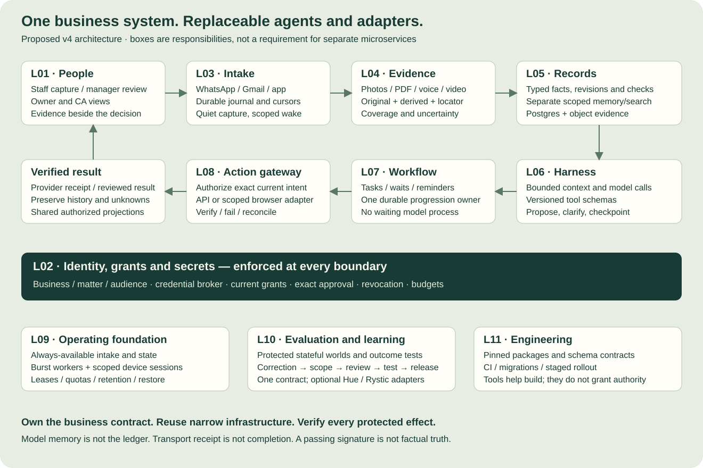

Reuse
Authentication, database, storage, durable execution and selected licensed adapters after compatibility checks.
Turn permitted conversations and media into trusted records, accountable work and verified actions.
We compared all 18 projects. The result is a focused SupaBiz architecture—not a requirement to install 18 platforms.
Design recommendation, not implementation status. This revision updates the architecture and roadmap. It does not demonstrate a working SupaBiz deployment. The 298 entries include 292 project learnings and six cross-project synthesis entries.
Start with a modular application and bounded workers. Each box owns a responsibility; it need not become a separate service.

Open the diagram to zoom. Editable Mermaid source.
Authentication, database, storage, durable execution and selected licensed adapters after compatibility checks.
Business records, grants, evidence UX, domain workflows, exact-action controls and outcome evaluation.
Competing platforms, unrestricted capture, automatic payments, broad federation and unproven optimization.
v3.1 already had 11 layers, 9 harness parts and seven workflows.
Preserve those IDs; add explicit ownership, adoption decisions and 298 learning assignments.
Research strengthens existing boundaries; it does not justify a new stack for each company.
Memory and evidence validation were broad responsibilities.
Make observation, candidate, accepted record, check, decision and effect separate contracts; add C11.
Definite/Marble/Terse expose distinct truth, verification and state concerns.
Correction and evaluation were useful practices.
Promote Asakana’s very-important loop into C12/C13, sprint work and release gates.
Learning must be scoped, reviewed and tested before it changes future behavior.
Integration and evaluation options were mostly general candidates.
Add exact code/pattern/service distinctions, package/license blockers and one common eval contract.
Public source or SDK documentation does not establish compatible, reusable production components.
Cloud/device concepts could imply a persistent environment per owner.
Always-available intake and durable state; burst workers and scoped persistent sessions only where needed.
Continuity is a product property, not a requirement to pay for idle compute.
Roadmap had stage gates without a comparison of all new projects.
Keep photo-to-task first; add role-owned sprint estimates, adoption spikes and conditional expansion.
One complete workflow provides stronger evidence than broad unfinished capability coverage.
The harness work remains useful. Prior evidence reported a known-question 24/24 composite and a separate fresh-intake 0/3 result, with substantial limits. Neither is a production accuracy claim. S0 must inspect the actual code and reproduce the fresh-event failures before choosing a replacement.
Keep the v3.1 layer IDs so old discussions remain meaningful. Select a layer to see what it owns, what to reuse, what SupaBiz must build and what proves it works.
All 11 responsibility layers
A staff capture surface and an evidence-led manager inbox.
Own the business UX. Adapt Asakana, Praxis, Sidekick, Marble, herdr and Agent37 interaction patterns.
Business switcher; capture receipt; attention inbox; evidence drawer; old/new diff; ownership; acknowledgement; outputs and connector health.
A generic chat transcript as the only interface; employee scoring; forcing a WhatsApp migration.
UI state and authenticated user intent; never accepted facts or execution authority.
Staff can report an issue without a form; managers can resolve it, inspect evidence and distinguish seen, approved, delivered and verified.
Determine who may see or change each resource, on whose behalf.
Reuse maintained authentication and secret-management primitives; study Executor’s credential boundary.
Organization/business/matter grants; person and agent principals; scoped connection bindings; approval digests; revocation; destination/audience checks; budget reservations.
Maximum permissions at signup; model-written permission grants; phone number or group membership as sufficient authority.
Membership, policy, grants and authorization decisions. Provider tokens remain in the broker.
Test with actual runtime DB role, pooled connections, revoked sockets, evidence downloads and exports; deny every seeded cross-scope case.
Capture permitted events with explicit coverage and recovery.
Keep the founder-reported WhatsApp path behind an adapter until tested; use direct Gmail first. Nango/selected Activepieces adapters remain conditional.
Durable source journal, native IDs, edit/delete revisions, cursor/checkpoint, media fetch, bounded burst collection, backfill, group enrollment and health.
Assuming any official WhatsApp API reads existing groups; acknowledging before durable capture; treating a quiet disconnected source as complete.
Source envelope, connection state, checkpoints and intake acknowledgements.
Disconnect, duplicate, out-of-order, edited/deleted and expired-cursor cases preserve identities and disclose gaps.
Turn permitted media into inspectable, uncertain observations.
Pilot Docling for documents; reuse replaceable speech/vision interfaces. Take Sidekick’s low-friction capture patterns.
Original/derivative storage, content type and byte limits, parser isolation, page/crop/time citations, language/translation separation, coverage and retention.
Continuous desktop/CCTV capture by default; inferring hidden food safety; treating sampled video as complete coverage.
Evidence objects, versions, locators, extraction provenance and access state.
Hindi/English/Hinglish, kitchen noise, rotated scans, unclear quantities and missing media yield correct extraction or useful abstention.
One authority for facts, with separate retrieval and reusable knowledge.
Reuse PostgreSQL transactions and object storage. Adapt Marble/Definite record semantics, Glen retrieval and Terse ownership principles.
Typed issues, stock movements, invoices, matters, tasks; entity matching; exact units; revision history; field authority; three-state checks; scoped memory and projection invalidation.
Vector DB as ledger; one generic task replacing every domain object; majority vote across copied or incomparable evidence; Terse plus SQL as competing authorities.
Accepted domain records and revisions. Memory, search, dashboards and calendars are derived views with explicit freshness.
Replaying duplicates/corrections/reordering preserves balances and matter identity; unknown inputs never pass; revoked source access affects derived context.
Interpret and propose work within a controlled execution contract.
Retain the current harness as a candidate; adapt Hermes seams. Evaluate Executor for selected tool discovery/execution only.
Context packet, model/modality adapter, schemas, run/step IDs, token/time/tool budgets, structured proposals, clarification, cancellation and checkpoints.
Whole-platform replacement before baseline; unrestricted shell bypass; multiple primary harnesses; a second LLM as ultimate authority.
Agent run and proposal state. It owns neither grants nor final business truth.
Run the same held-out cases through two compatible models; malformed calls, injected content and cancelled runs cannot bypass action policy.
Keep assignments, waits, reminders and exceptions alive across devices.
Prefer one durable workflow engine: Temporal is the pilot candidate. Compare with the existing persisted worker in S2 before expanding live multi-day work.
Versioned restaurant/legal packs, task transitions, ack/escalation timers, stop conditions, assignments, inbox/outbox processing and recovery.
LLM loops waiting for people; two workflow engines owning one task; interpreting transport delivery as acceptance or completion.
Workflow progression/timers. Accepted task and matter data stay in L05.
Restart during human wait, cancel before reminder, correct a date and resume old workers without duplicate work.
Apply an authorized change and establish its actual outcome.
Use typed provider APIs and deterministic PDF/export libraries. Executor/selected action code are conditional; Browser Use only for a documented API gap.
Action intent/digest, atomic claim, short-lived credentials, recipient/account binding, idempotency, read-back, uncertain-outcome reconciliation and browser takeover lease.
Blind resend after timeout; unmediated browser/shell writes; autonomous payment/filing; broad agent federation in MVP.
External action attempts, provider receipts, uncertainty and compensation.
Lose acknowledgement after a real sandbox commit; recover one logical effect or an explicit unresolved state. Test alternate execution paths.
Run bounded workers while keeping intake, state and recovery available.
Use managed database/object/secret services and containers first. Agent37 is an optional runtime provider behind an adapter; no always-on per-customer VM requirement.
Worker leases/generations, device enrollment, readiness, quotas, retention lineage, coherent restore, kill/pause semantics and cost attribution.
Kubernetes by default; platform-admin credentials inside workers; full desktop capture before a workflow needs it; mistaking a container label for isolation proof.
Execution lifecycle and resource policy. Durable records survive worker sleep/replacement.
Restore DB, objects, keys and pending jobs coherently; one unhealthy node cannot stall other tenants; sleep never drops intake.
Measure real outcomes and promote corrections without silent behavior drift.
One SupaBiz case/trace/oracle contract; optional Hue runner adapter and Rystic API twins. Reuse redacted observability primitives, not a second business audit store.
Synthetic stateful worlds, protected evaluator, fault injection, outcome/forbidden-effect assertions, incident-to-test, scoped correction promotion, release diffs and rollback.
Two mandatory eval platforms; testing only fluent answers; auto-training from every correction; vendor percentages as SupaBiz forecasts.
Experiment manifests, reviewed expected outcomes, release evidence and learned-rule lifecycle. Business audit stays in transactional storage.
Known-bad clients fail for the intended reason; missing observers never pass; quality/cost compared on the same eligible population.
Build a maintainable system with reproducible artifacts and explicit compatibility.
Use normal version control, CI, schema validation and migration tools. REA, OpenHands, herdr and other coding assistants are development aids.
Pinned dependency identity/license checks, adapter contract tests, schema migrations, environment separation, threat reviews, rollout and source-linked decisions.
Production install-on-demand; copying source without a suitable license; treating SDK docs as proof of package identity or compatible server behavior.
Code, schemas, release manifests, dependency decisions and engineering checks.
Build reproducibly; old/new worker and schema compatibility tested; incorrect-publisher and retired-route fixtures block release.
“Pattern” means build our own implementation. “Conditional code” means a scoped adoption experiment, with license, compatibility and recovery gates. No integration was installed by this update.
18 of 18 projects
Account/credential separation, selected schema discovery and bounded execution.
Our grants, action ledger, exact approvals and effect reconciliation.
Full adoption as the business platform; direct consequential writes before race/recovery fixes.
MIT root in saved review; beta dependency/build footprint and approval-consumption race require a pinned spike.
selected source review and isolated component checks
Continuity across devices, outputs panel, responsibilities and browser handoff.
Durable records, source intake independent of sleeping compute, leases, quotas and cancellation.
Reselling the starter unchanged or treating its source as the hosted backend.
MIT starter/examples; private hosting, lifecycle semantics, India availability, terms and total cost unverified.
selected source api contract review and isolated component checks
Evidence-linked work inbox, selective capture, accessibility-before-OCR ladder.
Explicit release controls, device grants, consent, retention and targeted capture.
Blanket recording and code copying under an assumed permissive license.
Saved source uses a commercial license; current rights and actual device security need validation.
selected source review and isolated component checks
Messy-message → structured draft → targeted correction → completed record.
Business entity mapping, scoped knowledge and the correction-to-regression loop.
Assuming a demo establishes training methods or automatic generalization.
Public product/demo review only; no backend code or measured uplift.
public product and recorded demo review no source audit
Matter workspace, document readiness, acknowledged assignment and blocker ownership.
Indian court/matter identities, reviewed date types, grants and corrected-notice propagation.
Automatic legal interpretation, conflict clearance or client disclosure.
Public product/policy review only; no Indian court integration established.
public product articles and policy review no source audit
Incident-to-case, fixed worlds, outcome scoring, release comparison and saved-evidence rescoring.
Our business oracle, protected answers, domain fixtures and one portable test contract.
Treating tracing as durable business audit or making Hue and Rystic duplicate owners.
MIT SDK; selected checks, not hosted server certification. Validate retention, adapter fit and cost.
selected sdk source review and 17 installed python component checks
Voice/photo capture, minimal clarification, asset location and verified closure.
Outlet/asset directory, multilingual evidence, role routing and SOP review.
Video as proof of hidden conditions; predictive maintenance before telemetry.
Public product and selected demo review; no reusable backend established.
public product policy and selected recorded demo review no source audit
Separate ordering, receiving, stocktake, invoice, credit and settlement objects.
Accepted-quantity movements, opening count/cutover, reconciliation and CA export.
Full ERP/POS replacement, forecasting or payments in the first pilot.
Public product evidence; no Tally/Zoho/GST integration established.
public product policy case study caption and selected promotional frame review no source audit
Job-scoped rooms, typed requests, separate transport/work receipts.
Relationship grants, identity, audience scope, durable idempotency and outcome verification.
An endless swarm or coding-terminal injection for operational transactions.
Apache-2.0 roots in saved review; pinned pair compatibility and server deployment must be tested.
selected source review and 21 isolated component checks
Task-scoped retrieval, visible memory owners, lineage and portable handoffs.
Own evidence/record authority, source ACLs, audience filtering and invalidation.
Universal shared memory, broad transcript upload or a second record authority.
MIT client artifacts reviewed; private backend permissions/retention not audited.
selected plugin and shipped cli review REA and 20 isolated checks no server audit
Exact-action review outside acting model; deny, hold and needs-context states.
Deterministic grants, approval binding, budgets and independent execution gate.
A review model overriding hard limits or unprotected browser paths.
Public product/policy review; model/security implementation unverified.
public product interactive example launch captions and policy review no source audit
Turn repeated work into guarded procedures; keep draft, tested and active separate.
Offline optimization, versioned packs, exception path, quality/cost comparisons.
Silent live self-modification or copying an SDK with unresolved license.
Selected skills/shipped SDK review; license/endpoint drift and private optimizer limits recorded.
selected skills source and shipped sdk review REA and 30 isolated checks no backend audit
Attention inbox, node health, durable job identity and control handoff.
Business states, role views, authorized device control and effect recovery.
Custom PTY migration or unverified cloud dependency for restaurant staff.
Apache-2.0 root; selected source/hook checks, not full runtime verification.
selected rust source public mock and 18 isolated hook checks no full runtime audit
Stable entity ownership, short guarded commands and committed live views.
Postgres record authority and current-version checks; keep slow AI outside transactions.
Two primary stores or an actor per message without a measured need.
MIT root; selected component checks. Benchmark against SQL/jobs before runtime adoption.
selected rust typescript observer source 28 component checks and public demo read no cloud audit
Observation → task and role-specific floor/attention views.
Camera health, episode identity, source authority, consent and confirmation.
Continuous CCTV as prerequisite; personal ratings; claimed savings without field evidence.
Public product/selected demo frames only; no verified API/model/code.
public product policy and selected demo frame review no source audit
Quiet capture, selective wake-up, stable identity and conversation/audience binding.
Durable journal, action authority, channel adapters and effective-permission checks.
Replying to every message, broad identity grants or copying unlicensed plugin source.
Selected plugin source reviewed; no explicit root/package reuse license found, no hosted/WhatsApp verification.
selected hermes plugin source public docs UI and 20 offline component checks no backend audit
Stateful service substitutes, coherent worlds, fault injection and deliberate bad controls.
Our WhatsApp/Gmail/domain fixtures, protected oracle and simulator fidelity matrix.
Putting simulators in production or treating examples as engine source.
MIT examples; simulator separately licensed; coverage and actual rollout unverified.
selected public examples docs UI and 15 offline helper checks no simulator engine audit
Shared records, exact checks, explicit unknowns and evidence-based decisions.
Domain schema, source authority, versioned checks, action gateway and reviewed correction loop.
Blind majority voting; treating signed evidence as factual truth; installing a same-name SDK.
Public docs/UI only; documented npm name resolves to unrelated insurance package; no finance SDK audit.
public product docs illustrative UI and registry attribution review no finance source audit
Photo-to-task ships first. Receiving/invoices and existing-matter notices add distinct domain rules after the shared boundaries work.
Staff → manager → assignee → Varun
Photo/voice with outlet and source ID; receipt means captured, not solved.
L03 · L04Visible observation and candidate location; uncertainty stays explicit.
L05 · L06Manager accepts/corrects exact issue and assignee; current grants checked.
L01 · L02Assign, verify delivery, await acknowledgement; escalation has owner and stop conditions.
L07 · L08Completion evidence plus configured reviewer confirms outcome.
L04 · L05Classified correction can become a scoped rule and held-out test.
L10Receiving staff → manager → CA
Retain delivery report and invoice as separate evidence.
L03 · L04Business, supplier, delivery, item and units must align; no blind fuzzy merge.
L05 · L0620 kg received and 22 kg billed remain distinct; discrepancy is 2 kg, not a new consensus value.
L05Authorized accepted receiving quantity creates one movement; rejected/quarantined quantities handled separately.
L02 · L05Manager owns discrepancy; credits, returns and payment are separate lifecycles.
L01 · L07CA-approved mappings, source bundle and export receipt; posting only after separate verified integration.
L08 · L10Arkaj email → Ramya → assigned lawyer/staff
Scoped email and exact attachment version; source authenticity remains an explicit check.
L03 · L04Court + case type/number/year or reviewed CNR; unresolved is not automatically a new case.
L05 · L06Separate notice/hearing/internal deadline; show old/new values and original page.
L05Ramya/responsible lawyer confirms intended change; task and document audience explicit.
L01 · L02Recheck source/version/grants; update task/calendar projection and verify effect.
L07 · L08Acknowledgement, blockers and revised reminders; corrected notice supersedes pending work without deleting history.
L07 · L10Daily accountant handoff and owner requests reuse the first released domain pack. Shift/leave and feedback have separate state and disclosure rules; they are not silently included in the first release.
Correction → scope → review → regression test → held-out evaluation → versioned release.
Keep a one-off correction, a customer preference, a matter rule and an organization policy distinct. Preserve who approved the change, why, when it applies and how to roll it back. Saving knowledge is not model-weight training.
Editable learning-loop diagram →Resolve current grants, accepted record versions, relevant source citations and token limits before model input. Separate approved business memory, live records and source observations; include intended answer audience.
Hermes context-engine patterns; evaluate Letta ideas only for a demonstrated gap.
A revoked or superseded object is absent from new context packets, including cached retrieval paths.
Stable run/step IDs, cancellation, execution budgets and explicit handoff to durable workflows.
Hermes bounded turn/tool-loop patterns.
Cancel between proposal and dispatch; no new side effect starts after cancellation is accepted.
Versioned input/output schemas, read/write classification, required grants and idempotency policy.
Selected upstream tool implementations through our adapter contract.
Unknown tools, extra fields and invalid business object references are rejected.
Current principal/resource checks, exact-payload approval and asynchronous review queue.
Identity-provider primitives; no researched agent replaces domain policy.
Changed recipient, payload or object version invalidates an approval when its scope no longer matches.
Capability profiles, redaction/data-region rules, request budgets, fallbacks and model-version recording.
Hermes-style provider/media dispatch; Docling as an independent parser.
Fallback preserves data policy and output contract; unsupported modality returns an explicit limit.
Citation resolution, unit/date checks, record-version checks and business invariants; human decisions where rules cannot settle ambiguity. Return PASS, FAIL or CANNOT_VERIFY only for supported predicates; keep human review and job states separate.
Schema-validation libraries and deterministic test tooling.
Fluent wrong quantities, wrong matters and non-existent citations fail acceptance.
Intent/attempt/receipt state, transactional outbox and provider-state reconciliation.
Persisted-intent ideas from Hermes; durable progression from the chosen workflow engine.
Crash after remote success yields reconciliation, not an automatic duplicate write.
Pinned pack/schema versions, allowed tools, ownership, staged rollout and rollback. Corrections require explicit one-off/customer/matter/workflow/organization scope, effective date and review before promotion.
Curated skills distribution patterns, not arbitrary runtime installation.
An unreviewed skill cannot expand the worker’s authority or alter a released workflow silently.
Correlation IDs, redacted traces, authoritative outcome fixtures and release reports. Use one case contract for Hue/Rystic adapters; grade state and forbidden effects with a protected evaluator.
Langfuse for permitted observability; focused security review procedures.
The same run can be followed from source to accepted state and receipt without exposing unnecessary raw content.
Build a modular control-plane application with isolated workers. Preserve the existing harness behind an interface.
Avoid 18 mandatory dependencies or a framework rewrite without a baseline.
Reopen when: Reopen if a measured module needs independent scaling or replacement. · Research: YC01, YC02, YC12, YC13
PostgreSQL transactions own accepted facts and revisions; object storage owns evidence bytes. Search, memory and calendar are projections.
Terse entity ownership is a useful design principle; its runtime is not selected. No second authoritative ledger.
Reopen when: Reopen actor runtime only after workload-specific durability/latency/cost comparison. · Research: YC08, YC10, YC14, YC18
Run S2 recovery spike; prefer Temporal for live multi-day workflows if the team can operate it. A persisted worker is the baseline, not an in-memory scheduler.
A durable engine coordinates work but cannot make remote effects exactly once. Do not introduce Activepieces as a second core state owner.
Reopen when: Choose before multi-day pilot expansion; do not implement two production engines. · Research: YC02, YC05, YC13, YC14
A mandatory SupaBiz gateway controls every protected effect, including generated code and browser/device routes.
Executor is conditional code; Decawork supplies a review pattern. A review model may escalate or deny, never grant extra rights.
Reopen when: Specialized contextual reviewer requires lower risk or review burden at equal hard policy. · Research: YC01, YC11, YC16, YC18
Connect selected sources, groups, history and purpose. Show listening, working and missing coverage separately.
Maximum permissions and desktop surveillance are unnecessary for the initial workflows. Quiet capture still requires permission.
Reopen when: Add a device capability only when a concrete workflow cannot use a safer structured source. · Research: YC03, YC07, YC16
VERY IMPORTANT: correction → classified scope → reviewed rule or memory → regression case → held-out test → release/rollback.
Saved memory, prompt/tool changes, routing and model-weight training are different changes. Do not silently generalize an approval click.
Reopen when: Fine-tuning requires a separate consent, dataset and measurable benefit decision. · Research: YC04, YC06, YC08, YC12, YC18
Own the world/trace/oracle manifest; optionally use Hue for orchestration and Rystic for specific service semantics.
These tools overlap in evaluation but neither owns our business definition of success. Keep graders and real credentials outside the agent world.
Reopen when: Buy an adapter only when it reduces maintained fixture work at validated fidelity and total cost. · Research: YC06, YC17
Keep v3.1’s photo issue → accepted assignment → verified closure as first vertical slice. Follow with receiving/invoice; legal starts in shadow mode.
The reviews broaden the design, not the first release. Staff should gain value before migrating chat or accounting.
Reopen when: If pilot access is only Arkaj, swap vertical order while keeping shared gates; do not build both fully at once. · Research: YC04, YC05, YC07, YC08
Use typed evidence, candidate, accepted record, check, decision and effect records with independent states.
A completed run can contain failed checks; human exception authorization preserves the historical verdict.
Reopen when: Add new domain predicates explicitly; do not label subjective interpretation deterministically verified. · Research: YC08, YC14, YC18
Separate always-available intake/control state from burst model/media workers. Reserve spend and capacity by business.
Agent37’s persistent workspace UX does not require an always-on VM for every tenant. Do not wake an LLM on every group message.
Reopen when: Persistent browser/device sessions are scoped exceptions with measured idle cost. · Research: YC02, YC13, YC16
First build shared task/evidence views; later add job rooms and relationship-scoped agent requests.
Agent Relay/Inkbox transport identity is not cross-business authority. Native chat is an optional path toward WhatsApp independence.
Reopen when: Requires audited relationship grants, revocation, audience checks and a paying workflow need. · Research: YC09, YC10, YC16
Verify publisher, exact version, integrity, license, required routes and deployment behavior before enabling an adapter.
Definite’s package collision, Inkbox’s missing license and several SDK/doc mismatches block blind reuse.
Reopen when: Reopen on vendor-confirmed artifacts and passing compatibility/security gates. · Research: YC01, YC12, YC16, YC18
Durable decisions and action intent commit transactionally. Diagnostic traces are bounded, redacted and may be best-effort with visible loss.
A telemetry outage must not duplicate work; missing mandatory audit data can block a new action. Strong signatures do not establish factual truth.
Reopen when: Add signed packs/external witnessing for a concrete verification requirement. · Research: YC06, YC18
Build domain knowledge and operator UX; reuse narrow infrastructure primitives and compatible adapters.
Public demos reveal workflows, not backend quality or code rights. Selected source checks are not full security audits.
Reopen when: Any new adoption is a bounded experiment with a rollback/replacement path. · Research: YC04, YC05, YC07, YC08, YC15, YC18
These are target defaults. S0 should preserve an adequate existing implementation and avoid a rewrite for preference alone.
| Part | Proposed choice | Reason / gate |
|---|---|---|
| UI | React + TypeScript responsive web application; Vite is a proposed build baseline | One evidence/review interface for desktop and phone; native wrappers later for demonstrated OS capabilities. Keep an adequate existing UI stack after S0; do not rewrite merely to match this recommendation. |
| Control plane | TypeScript modular service; Fastify is a proposed API baseline | Shared typed contracts, clear domain modules, fewer deployments for a small team. Existing backend remains acceptable; choose one language/runtime per module and validate schemas at trust boundaries. |
| Durable state | Managed PostgreSQL + object storage + secret manager | Transactions, revisions, grants, source metadata and outbox; media bytes stay outside database rows. Runtime role cannot own tables/bypass RLS. Test grants, encryption, backups, object retention and recovery. |
| Jobs and workflow | Durable jobs initially; Temporal preferred candidate for multi-day work after S2 spike | One owner of waits, signals and retries; SQL remains authoritative for domain facts. Recovery, worker upgrade, timer and timeout-after-effect tests; explicit managed-versus-self-operated cost decision. |
| Media and model workers | Retain current harness language; Python workers for Docling/processing where appropriate | Replaceable bounded processing; no need to translate a useful Python harness into TypeScript. Versioned API/schema, resource limits, source provenance, data-policy-compatible provider fallbacks. |
| Evaluation and diagnostics | Own cases/oracle; optional Hue adapter, Rystic twins and redacted trace backend | Keep business correctness portable and avoid overlapping mandatory platforms. No production credentials in worlds; deliberate defects caught; logs cannot replace business audit. |
| Development environment | Monorepo with domain/adapter packages, containers and CI; isolated test/staging/production credentials | Test changes across contracts together; reproducible environment and explicit migrations. Lockfiles/digests, license inventory, generated contract checks, expand/contract migrations, canary and rollback; no Kubernetes prerequisite. |
Suggested modules: identity, intake, evidence, records, workflow, actions, model-adapters and evaluation. API contracts are versioned; slow model/media work stays outside database transactions. Use expand/contract migrations and test mixed worker/schema versions before rollout.
Illustrative planning: 2 platform/integration engineers + 1 product engineer, shared QA, weekly manager/CA/Ramya access; scope and actual code condition determine dates
Roughly 11–14 sequential engineering weeks through S5 for the stated team, excluding waiting/procurement and S6. Estimates are not commitments. Each estimate is planning judgment; a failed gate extends the stage.
1 week
Depends on: baseline access
Owner: Platform lead + product owner
Outside this stage: No framework migration, procurement or claim that prior 24/24 known cases represent general accuracy.
2 weeks
Depends on: S0
Owner: Integration engineer + platform lead
Outside this stage: No autonomous external writes; no blanket desktop or microphone capture.
2–3 weeks
Depends on: S1
Owner: Product engineer + platform lead + restaurant manager
Outside this stage: No full ERP, generic agent marketplace, automated accounting or native messenger.
2 weeks
Depends on: S2
Owner: Domain/integration engineer + manager/CA
Outside this stage: No demand-forecast optimization, supplier auto-pay or POS replacement.
2 weeks; can overlap S3 only with a separate staffed lane
Depends on: S2
Owner: Product/integration engineer + Ramya + responsible lawyer
Outside this stage: No legal advice, inferred filing deadlines, automatic new-matter creation or automatic client updates.
2 weeks per released pilot; extends if gates fail
Depends on: S2
Owner: Platform lead + QA + pilot owner
Outside this stage: No expanding scope to hide poor first-workflow completion.
Later; separately scoped
Depends on: S5
Owner: Product + platform
Outside this stage: No automatic agent federation or mandatory migration from WhatsApp.
Monthly total = allocated infrastructure + connector operations + media + model tokens/tool calls + storage/backups/egress + human review + support/recovery. Divide by correct completed workflows; also report cost per attempted workflow.
Arbitrary USD inputs, not vendor prices or a forecast. Assumes two calls per wake, 2,500 input/400 output tokens per call at $1/$4 per million; review takes two minutes at $0.50/min. Other assumed costs: $150 infrastructure + $8 media + $50 support.
Provisional, to freeze with pilot owner in S0: zero critical forbidden effects in the enumerated release suite; 100 representative shadow cases per released workflow before expanding autonomy; paired reviewer-effort/cost comparison with no quality regression. These sample targets do not establish rare-event safety.
| Path | Without approach | With approach / space | Limit |
|---|---|---|---|
| Exact entity lookup | O(N) scan per query; O(N²) all-pairs matching | O(log N + k) indexed lookup, with bounded candidate k O(N) indexes | Ambiguous/fuzzy joins can approach quadratic; cap candidates and escalate rather than silently miss. |
| Incremental checks | O(NR) full evaluation for N records and R applicable rules | O(VR) for affected dependency closure V O(N + dependency edges) | V may equal N for global rules; retain full recompute reference and version invalidation. |
| Model wake-up | M messages each trigger a model loop | qM eligible triggers, plus bounded follow-up calls Durable capture remains O(M) metadata plus media | q is measured; routing must be evaluated for missed work. Fewer calls are not automatically fewer errors. |
| Media | Unbounded download/decoding and full history in context | O(B) byte processing with per-job/concurrency caps; scoped evidence retrieval O(B) retained evidence, bounded active working set | Sampling video reduces processed frames but loses coverage; no unobserved-event absence claims. |
| Concurrency | Long model calls hold record locks | Snapshot/version → slow work outside transaction → short guarded commit O(active proposals) plus durable state | Hot records still serialize; measure conflicts and queue delay. Do not promise linear scaling. |
These 298 entries remain traceable to their original review. A delivery stage indicates where the idea is introduced or evaluated; it is not a claim that every related capability ships in that sprint.
298 of 298 saved entries
Keep credentials outside model history; every model uses server-authorized connections.
Adopt principle; build domain-specific control · Merged into Identity, grants and secrets. Shares the common membership, policy, grants and authorization decisions.
Measure: Reconnect time, successful model swap, permission isolation
Origin: YC01-executor · Original evidence: YC01-executor/findings.json
Make Consu/ForeFathers/account/recipient explicit on action previews; never guess across businesses.
Adopt principle; build domain-specific control · Merged into Identity, grants and secrets. Shares the common membership, policy, grants and authorization decisions.
Measure: Wrong-business and wrong-recipient rate
Origin: YC01-executor · Original evidence: YC01-executor/findings.json
Permission-filtered discovery plus small selected schemas; compare against full schemas at equal task quality.
Adopt principle; build domain-specific control · Merged into Bounded agent harness. Shares the common agent run and proposal state.
Measure: Total tokens, wrong tool rate, p95 task latency
Origin: YC01-executor · Original evidence: YC01-executor/findings.json
Show exact change, evidence and expiry; durable action-bound approvals with atomic claim and current grants.
Adopt principle; build domain-specific control · Merged into Identity, grants and secrets. Shares the common membership, policy, grants and authorization decisions.
Measure: Approval completion and recovery, duplicate execution rate
Origin: YC01-executor · Original evidence: YC01-executor/findings.json
Read-only aggregation first; preserve evidence references, byte/CPU/time caps and typed outputs.
Adopt principle; build domain-specific control · Merged into Bounded agent harness. Shares the common agent run and proposal state.
Measure: Correctness, total tokens, resource usage
Origin: YC01-executor · Original evidence: YC01-executor/findings.json
Distinguish reconnect, missing scope, denied action and unavailable tool; explain affected business and remaining work.
Adopt principle; build domain-specific control · Merged into Identity, grants and secrets. Shares the common membership, policy, grants and authorization decisions.
Measure: Recovery time, support tickets, successful completion
Origin: YC01-executor · Original evidence: YC01-executor/findings.json
Business -> evidence -> proposed change -> responsible person -> approval/status -> verified result. This complete card is our proposed adaptation, not verified Executor UI.
Adapt UX; build SupaBiz implementation · Merged into People and decisions. Shares the common ui state and authenticated user intent; never accepted facts or execution authority.
Measure: Task understanding, mistaken approvals, unresolved work
Origin: YC01-executor · Original evidence: YC01-executor/findings.json
Adopt continuity across phone and desktop. Keep durable business work IDs separate from vendor conversation IDs; closing a screen is not cancelling a task.
Adopt principle; build domain-specific control · Merged into Cloud, devices and operating limits. Shares the common execution lifecycle and resource policy.
Measure: Reload recovery, duplicate submissions, cross-device continuity
Origin: YC02-agent37 · Original evidence: YC02-agent37/findings.json#AG37-02
Adopt the visible responsibility list. Build typed responsibilities, assignee, business/matter, deadline, evidence, next check and completion criteria in a database. Replace the demo cookie/store.
Adapt UX; build SupaBiz implementation · Merged into People and decisions. Shares the common ui state and authenticated user intent; never accepted facts or execution authority.
Measure: Unassigned work, missed checks, human touches
Origin: YC02-agent37 · Original evidence: YC02-agent37/findings.json#AG37-05
Adopt assisted sign-in and exception handoff. Implement a server-owned exclusive control lease and acknowledged cancellation before enabling input; include scheduled runs, not just foreground chat.
Adopt principle; build domain-specific control · Merged into Actions, browser and collaboration. Shares the common external action attempts, provider receipts, uncertainty and compensation.
Measure: Conflicting input, handoff time, post-handoff correctness
Origin: YC02-agent37 · Original evidence: YC02-agent37/findings.json#AG37-07
Adapt to What SupaBiz knows: facts with business/matter scope, evidence, freshness, owner corrections and change history. Keep preferences distinct from approved records and from executable instructions.
Adapt UX; build SupaBiz implementation · Merged into People and decisions. Shares the common ui state and authenticated user intent; never accepted facts or execution authority.
Measure: Fact corrections, stale retrieval, overwrite conflicts
Origin: YC02-agent37 · Original evidence: YC02-agent37/findings.json#AG37-09
Adopt an Outputs panel for reports, PDFs, reconciliations and task sheets, with evidence and version links. Use object storage and document IDs; agent paths are implementation details.
Adapt UX; build SupaBiz implementation · Merged into People and decisions. Shares the common ui state and authenticated user intent; never accepted facts or execution authority.
Measure: Time to find result, correct evidence links
Origin: YC02-agent37 · Original evidence: YC02-agent37/findings.json#AG37-10
Copy staged setup feedback. Build selected-group intake, cursors/backfill, dedupe, edits/deletes, media fetch, reconnect and source health. Keep that intake available when compute sleeps.
Adopt principle; build domain-specific control · Merged into Connections and durable intake. Shares the common source envelope, connection state, checkpoints and intake acknowledgements.
Measure: Setup completion, reconnect recovery, sync freshness
Origin: YC02-agent37 · Original evidence: YC02-agent37/findings.json#AG37-12
Pin template digests, keep dependencies in images and add schema/skill migration readiness. Persist business state outside RAM and treat running, healthy and ready-for-work as different checks.
Adopt principle; build domain-specific control · Merged into Cloud, devices and operating limits. Shares the common execution lifecycle and resource policy.
Measure: Missed events, wake p95, total cost per verified outcome
Origin: YC02-agent37 · Original evidence: YC02-agent37/findings.json#AG37-15
Use public patterns and consider the hosted service behind a replaceable runtime adapter. A source fork does not self-host the Agent37 cloud.
Adopt principle; build domain-specific control · Merged into Cloud, devices and operating limits. Shares the common execution lifecycle and resource policy.
Measure: Export/rebuild fidelity, provider-specific dependencies
Origin: YC02-agent37 · Original evidence: YC02-agent37/findings.json#AG37-01
Use a durable SupaBiz scheduler with typed one-shot/recurring tasks, timezone, run uniqueness, overlap policy, retry, catch-up and outcome verification. Adapt the UX, not the name-based reminder lifecycle.
Adopt principle; build domain-specific control · Merged into Durable work and domain packs. Shares the common workflow progression/timers.
Measure: Missed, duplicate and overlapping firings; recovery
Origin: YC02-agent37 · Original evidence: YC02-agent37/findings.json#AG37-06
Use invocation IDs and explicit running, cancelling, cancelled, failed, unknown and verified states. A closed stream or green tool chip cannot certify an inventory or calendar change.
Adopt principle; build domain-specific control · Merged into Actions, browser and collaboration. Shares the common external action attempts, provider receipts, uncertainty and compensation.
Measure: False success, duplicate writes, unresolved outcomes
Origin: YC02-agent37 · Original evidence: YC02-agent37/findings.json#AG37-03
Build creation reservations, idempotent operation IDs, durable teardown jobs, tombstones, retry and provider reconciliation. Authorization to create must also satisfy plan and concurrency quotas.
Adopt principle; build domain-specific control · Merged into Cloud, devices and operating limits. Shares the common execution lifecycle and resource policy.
Measure: Orphan runtime count, teardown time, spend by business
Origin: YC02-agent37 · Original evidence: YC02-agent37/findings.json#AG37-18
Reuse the UX and bounded pool pattern. Add resumable object uploads, global quotas, media IDs and retention. A text display truncation after full download is not a transfer or memory limit.
Adopt principle; build domain-specific control · Merged into Media and evidence. Shares the common evidence objects, versions, locators, extraction provenance and access state.
Measure: Peak memory, upload retry, content isolation
Origin: YC02-agent37 · Original evidence: YC02-agent37/findings.json#AG37-11
Adopt a work-card UX with business, matter/outlet, owner, source, due date, confidence and next action. Keep personal snooze separate from official deadlines. A Done click is acknowledgement; business completion needs result evidence.
Adapt UX; build SupaBiz implementation · Merged into People and decisions. Shares the common ui state and authenticated user intent; never accepted facts or execution authority.
Measure: Stale-action rejection; correction time; verified completion rate
Origin: YC03-screenpipe · Original evidence: YC03-screenpipe/findings.json#SP-02
Make Show why a first-class control. Open the original court email, message, photo or document version. Recheck grants when opened and show deleted/expired/unavailable evidence honestly. An observed screen is not proof that a remote write committed.
Adapt UX; build SupaBiz implementation · Merged into People and decisions. Shares the common ui state and authenticated user intent; never accepted facts or execution authority.
Measure: Evidence availability and time to verify; denied cross-business reads
Origin: YC03-screenpipe · Original evidence: YC03-screenpipe/findings.json#SP-03
Let Ramya demonstrate a synthetic matter-intake workflow. Draft its steps, exceptions and evidence; ask missing questions; require review and sandbox tests before granting limited execution. Observed repetition alone must never create a standing action permission.
Defer capability; retain boundary now · Merged into Evaluation and governed improvement. Capability remains outside first pilot; authority/evidence constraints apply wherever the shared core uses this pattern.
Measure: Procedure acceptance and exception recall
Origin: YC03-screenpipe · Original evidence: YC03-screenpipe/findings.json#SP-04
Offer Speak correction, Not sure and Undo for busy managers. Store transcript, extracted fields and provenance separately. A matching quote is a grounding check, not semantic validation; benchmark names, dates, amounts and Hindi/English/Hinglish.
Adapt UX; build SupaBiz implementation · Merged into People and decisions. Shares the common ui state and authenticated user intent; never accepted facts or execution authority.
Measure: Field correction effort; names/dates/amount error by language
Origin: YC03-screenpipe · Original evidence: YC03-screenpipe/findings.json#SP-05
Build a modality ladder: connector fields first, accessibility next, OCR/vision only when needed, audio transcription when authorized. Preserve source type and uncertainty. Never project coordinates from a stale or different monitor snapshot onto a live action.
Defer capability; retain boundary now · Merged into Media and evidence. Capability remains outside first pilot; authority/evidence constraints apply wherever the shared core uses this pattern.
Measure: OCR calls, p95 latency, accuracy and device energy
Origin: YC03-screenpipe · Original evidence: YC03-screenpipe/findings.json#SP-06
Use the same acknowledgement principle for WhatsApp/email cursors: do not mark an event processed before evidence and required records are durable. Use native event identity for business dedupe; identical text is not proof of the same order or payment.
Adopt principle; build domain-specific control · Merged into Connections and durable intake. Shares the common source envelope, connection state, checkpoints and intake acknowledgements.
Measure: Replay loss and duplicate business record rate
Origin: YC03-screenpipe · Original evidence: YC03-screenpipe/findings.json#SP-07
Adopt bounded queues, per-device budgets and last-success/cursor-lag displays. Connected is not fresh. Static-screen dedupe heartbeats are useful liveness evidence but do not prove that every relevant business event was observed.
Adopt principle; build domain-specific control · Merged into Connections and durable intake. Shares the common source envelope, connection state, checkpoints and intake acknowledgements.
Measure: Source lag, dropped events, queue pressure and recovery time
Origin: YC03-screenpipe · Original evidence: YC03-screenpipe/findings.json#SP-08
Carry identity quality, captured_at, occurred_at, timezone, precision, raw label and evidence reference into SupaBiz observations. Use native email/message IDs where available. Unknown matter or ambiguous hearing date needs clarification, not automatic assignment.
Adopt principle; build domain-specific control · Merged into Business records and governed memory. Shares the common accepted domain records and revisions.
Measure: Matter matching, timezone errors and unresolved identities
Origin: YC03-screenpipe · Original evidence: YC03-screenpipe/findings.json#SP-09
Retrieve small snippets plus durable IDs, then fetch detail on demand. Enforce an aggregate token/byte budget outside per-hit limits. Treat all captured text as untrusted data. Reobserve the live target and reauthorize before any action.
Adopt principle; build domain-specific control · Merged into Bounded agent harness. Shares the common agent run and proposal state.
Measure: Tokens per correct answer; source fidelity; historical-action rejection
Origin: YC03-screenpipe · Original evidence: YC03-screenpipe/findings.json#SP-11
Ask for the permission needed by the selected workflow, with a visible pause state and exclusion controls. Keep personal context private unless a specific business evidence item is released. Do not start with blanket keyboard, clipboard, microphone and full-desktop capture.
Defer capability; retain boundary now · Merged into Identity, grants and secrets. Capability remains outside first pilot; authority/evidence constraints apply wherever the shared core uses this pattern.
Measure: Capture exclusion success and consent recovery
Origin: YC03-screenpipe · Original evidence: YC03-screenpipe/findings.json#SP-13
Use captured → classified → authorized for release as separate stages. Recheck business/matter grants and deletion state at retrieval/export boundaries. Give users a visible pending/revoked state. Data already transmitted cannot be recalled by a later local filter.
Defer capability; retain boundary now · Merged into Identity, grants and secrets. Capability remains outside first pilot; authority/evidence constraints apply wherever the shared core uses this pattern.
Measure: Revocation/deletion enforcement at release boundaries
Origin: YC03-screenpipe · Original evidence: YC03-screenpipe/findings.json#SP-16
Measure end-to-end completion, correction effort, missed assignments and verified action success on the same task set before/after. Report sample count and uncertainty; do not turn observed elapsed intervals into claimed staff savings.
Adopt principle; build domain-specific control · Merged into Evaluation and governed improvement. Shares the common experiment manifests, reviewed expected outcomes, release evidence and learned-rule lifecycle.
Measure: Baseline vs proposed workflow outcomes with sample count
Origin: YC03-screenpipe · Original evidence: YC03-screenpipe/findings.json#SP-18
Make WhatsApp/email intake useful before requiring an app migration. Use the SupaBiz app for unresolved decisions, evidence and control. A mobile-first confirmation can link to a specific task without moving an entire team into a new chat system. Distinguish watching approved sources from permission to act.
Adapt UX; build SupaBiz implementation · Merged into People and decisions. Shares the common ui state and authenticated user intent; never accepted facts or execution authority.
Measure: Activation-to-first-verified-workflow time; staff participation; weekly manual entries avoided.
Origin: YC04-asakana · Original evidence: YC04-asakana/findings.json#AS-01
Build an entity-resolution layer over customer, product, unit, outlet, matter and person IDs. Store aliases with tenant/customer scope, owner, evidence, valid dates and precedence. Current explicit instructions beat historical defaults; contradictory evidence opens a question. Retrieval must filter authorization before returning candidates.
Adopt principle; build domain-specific control · Merged into Business records and governed memory. Shares the common accepted domain records and revisions.
Measure: SKU/unit/customer accuracy; ambiguous cases caught; cross-business leakage; correction effort.
Origin: YC04-asakana · Original evidence: YC04-asakana/findings.json#AS-02
Offer What SupaBiz knows about this customer or matter. Separate observed habit, approved preference, operational rule and one-off exception. Give each a source, last-confirmed date and authorized editor. Staff departure should revoke access while retaining business-owned records under policy, not retain private unrelated chat.
Adopt principle; build domain-specific control · Merged into Business records and governed memory. Shares the common accepted domain records and revisions.
Measure: New-staff ramp-up; stale-rule errors; correction propagation; unauthorized memory retrieval.
Origin: YC04-asakana · Original evidence: YC04-asakana/findings.json#AS-03
Resolve the reference to one source record and display the proposed diff. Revalidate price, pack size, availability, date, outlet and substitutions. Never reuse an old payment instruction or court deadline because it appeared in similar work. Missing or multiple matching records require a targeted question.
Adopt principle; build domain-specific control · Merged into Business records and governed memory. Shares the common accepted domain records and revisions.
Measure: Reference resolution precision; stale price/unit errors; ambiguity recall.
Origin: YC04-asakana · Original evidence: YC04-asakana/findings.json#AS-04
Show the uncertain field, its source and a small candidate set. Preserve resolved lines without implying the whole order is approved. Represent extraction certainty, entity ambiguity and action permission independently. Approval must bind the exact revision and destination; any meaningful edit invalidates it.
Adapt UX; build SupaBiz implementation · Merged into People and decisions. Shares the common ui state and authenticated user intent; never accepted facts or execution authority.
Measure: Unsafe auto-accept rate, human minutes/order, exception recall and stale-approval rejection.
Origin: YC04-asakana · Original evidence: YC04-asakana/findings.json#AS-05
For each extracted field, retain message ID, attachment page/crop or audio time range. Let an operator compare original and interpreted quantity/unit/date without opening five apps. Never fabricate a crop or quote when extraction failed. Deleted, expired or inaccessible media needs an explicit evidence state.
Adapt UX; build SupaBiz implementation · Merged into People and decisions. Shares the common ui state and authenticated user intent; never accepted facts or execution authority.
Measure: Review time, evidence availability and field-level correction rate.
Origin: YC04-asakana · Original evidence: YC04-asakana/findings.json#AS-06
Use received → interpreted → needs review / ready → approved → posting → posted → verified, with failed, superseded and uncertain branches. A drafted purchase order must not increase stock on hand; receiving goods is a different event. A draft credit must not become an automatic refund. Verify destination ID, account and revision after writes.
Adopt principle; build domain-specific control · Merged into Business records and governed memory. Shares the common accepted domain records and revisions.
Measure: Duplicate writes; false completion; unauthorized posting; reconciliation time.
Origin: YC04-asakana · Original evidence: YC04-asakana/findings.json#AS-07
Send a compact receipt with outcome, destination record, unresolved items and evidence link. Batch routine successes where useful, but route urgent exceptions by deadline and accountable person. Use a durable notification outbox so a retry does not send repeated confirmations. Sending a receipt is not proof the recipient read it.
Adapt UX; build SupaBiz implementation · Merged into People and decisions. Shares the common ui state and authenticated user intent; never accepted facts or execution authority.
Measure: Notifications per completed task; actionable response time; duplicate sends; missed urgent exceptions.
Origin: YC04-asakana · Original evidence: YC04-asakana/findings.json#AS-08
Start with one supported transaction type and destination. Expand using shared evidence/entity machinery but distinct domain schemas and action policies. Model order, shipment, goods receipt, stock adjustment, invoice, credit note and payment separately. A single generic task object cannot safely replace these lifecycles.
Adopt principle; build domain-specific control · Merged into Business records and governed memory. Shares the common accepted domain records and revisions.
Measure: Verified outcomes by workflow; support burden; regression rate when adding a transaction type.
Origin: YC04-asakana · Original evidence: YC04-asakana/findings.json#AS-09
Maintain a capability matrix per ERP/account: search, draft creation, update, post, cancel, idempotency support and read-back. Prefer typed APIs. Any browser fallback needs current observation, exclusive control and recovery. Begin with one destination; do not promise universal integration or assume a vendor logo proves coverage.
Adopt principle; build domain-specific control · Merged into Actions, browser and collaboration. Shares the common external action attempts, provider receipts, uncertainty and compensation.
Measure: Connector conformance; recovery after timeout; drift failures; cost per supported destination.
Origin: YC04-asakana · Original evidence: YC04-asakana/findings.json#AS-10
Build a consented, de-identified evaluation set split by customer and time to limit leakage. Include messy media, aliases, mixed language and malicious instructions. Measure both accepted-case accuracy and how much work is rejected. A system can look accurate by escalating everything; measure retained human effort as well.
Adopt principle; build domain-specific control · Merged into Evaluation and governed improvement. Shares the common experiment manifests, reviewed expected outcomes, release evidence and learned-rule lifecycle.
Measure: Field precision, unsafe auto-accept, escalation fraction, human effort, latency and verified outcomes.
Origin: YC04-asakana · Original evidence: YC04-asakana/findings.json#AS-11
Expose where evidence is stored, which model/tool receives it, retention, deletion and training use. Build least-privilege connection grants and scoped key storage. Price SupaBiz against verified workflow value and total service cost, including exceptions and support; evaluate predictable subscription plus usage rather than assuming transaction-value commission fits every business.
Adopt principle; build domain-specific control · Merged into Identity, grants and secrets. Shares the common membership, policy, grants and authorization decisions.
Measure: Revocation/deletion tests; total cost per verified workflow; pricing predictability; gross margin after support.
Origin: YC04-asakana · Original evidence: YC04-asakana/findings.json#AS-12
Separate business memory, retrieval/workflow improvements and model-weight training. Capture the original proposal, correction, verified outcome and evidence. Ask whether a correction applies once, to one customer/matter, to one workflow or to an authorized firm-wide rule. Preserve human edit precedence, scope, approval, revision and expiry. Turn meaningful corrections into permissioned regression cases before changing models/prompts/rules. Business context stays outside any single model provider.
Adopt principle; build domain-specific control · Merged into Evaluation and governed improvement. Shares the common experiment manifests, reviewed expected outcomes, release evidence and learned-rule lifecycle.
Measure: Unsafe learned generalizations; held-out field accuracy; correction effort; regression rate; knowledge portability
Origin: YC04-asakana · Original evidence: YC04-asakana/important-learning.json
Show confirmed facts, inferred patterns, conflicting evidence and missing context separately. On a new customer or matter, ask for the smallest missing fact rather than silently importing a similar customer’s habits. A high retrieval score is not proof of identity or permission.
Adopt principle; build domain-specific control · Merged into Business records and governed memory. Shares the common accepted domain records and revisions.
Measure: Cold-start errors; ambiguity detection; unnecessary questions; cross-scope retrieval
Origin: YC04-asakana · Original evidence: YC04-asakana/important-learning.json
Before activating a reusable rule, show scope and examples it would change. Version and roll back rules, retain the exact revision used by each proposal, and identify affected pending work. A new rule must not silently alter approved records or repeat completed actions.
Adopt principle; build domain-specific control · Merged into Evaluation and governed improvement. Shares the common experiment manifests, reviewed expected outcomes, release evidence and learned-rule lifecycle.
Measure: Rule rollback recovery; affected-work coverage; stale approval rejection; duplicate actions
Origin: YC04-asakana · Original evidence: YC04-asakana/important-learning.json
Give Ramya one operational record per matter with an evidence timeline, current verified hearing information, tasks, documents, ownership and blockers. Messages remain evidence linked to the record. An update to one matter must not create another chat-shaped island. Maintain related applications or appeals as linked records instead of merging everything with the same parties.
Adopt principle; build domain-specific control · Merged into Business records and governed memory. Shares the common accepted domain records and revisions.
Measure: Time to reconstruct a matter; duplicate matters; missed updates; evidence coverage.
Origin: YC05-praxis · Original evidence: YC05-praxis/findings.json#PR-01
Create a decision inbox: original court notice beside extracted fields and a precise proposed change. Show what is known, uncertain and blocked. Permit correction of one field without losing the rest. Group related changes into a review packet but require explicit authority for each calendar write, assignment or outbound message. Approval binds the source version, record revision and exact action.
Adapt UX; build SupaBiz implementation · Merged into People and decisions. Shares the common ui state and authenticated user intent; never accepted facts or execution authority.
Measure: Human minutes per update; incorrect approvals; unresolved exception age; stale approvals rejected.
Origin: YC05-praxis · Original evidence: YC05-praxis/findings.json#PR-02
Maintain expected document types and versions per work item. Separate received, readable, identified, complete, current-for-purpose and accepted-by-reviewer. A badge must say which checks passed; it must not imply legal validity or authenticity. A historic executed agreement does not expire because another document type has a freshness rule. Identify the missing page or wrong version precisely.
Adopt principle; build domain-specific control · Merged into Media and evidence. Shares the common evidence objects, versions, locators, extraction provenance and access state.
Measure: Work blocked by missing documents; mistaken readiness; repeated document requests; review time.
Origin: YC05-praxis · Original evidence: YC05-praxis/findings.json#PR-03
Every blocked task records what is missing, who can supply it, next check time, escalation owner and stop conditions. Run durable reminders outside the LLM session. Before sending, recheck replies, new attachments, closure, permissions and cancellation. Combine repeated requests and respect firm-approved frequency limits. Human approval is required for the initial outbound policy and messages outside that authority.
Adopt principle; build domain-specific control · Merged into Durable work and domain packs. Shares the common workflow progression/timers.
Measure: Age of blockers; unnecessary chases; missed escalations; duplicate reminders.
Origin: YC05-praxis · Original evidence: YC05-praxis/findings.json#PR-04
Create an explicit publication projection: approved updates, documents requested, upcoming confirmed events and the client’s next action. Keep internal analysis, other clients, privileged notes and unapproved drafts out. For litigation use milestones and readiness, not a percentage suggesting the case is almost won. Each published item has a publisher, audience, evidence and revision.
Adapt UX; build SupaBiz implementation · Merged into People and decisions. Shares the common ui state and authenticated user intent; never accepted facts or execution authority.
Measure: Status enquiries avoided; disclosure errors; client task completion; outdated published updates.
Origin: YC05-praxis · Original evidence: YC05-praxis/findings.json#PR-05
Let a principal release bookable windows and permitted meeting types. Read availability without exposing private event bodies. Treat proposing a time, placing a hold and committing an event as different operations. Court hearings are externally imposed events, not negotiable consultation slots. Track conflicts and let the authorized person resolve them.
Adopt principle; build domain-specific control · Merged into Durable work and domain packs. Shares the common workflow progression/timers.
Measure: Double bookings; inappropriate calendar access; scheduling effort; event verification failures.
Origin: YC05-praxis · Original evidence: YC05-praxis/findings.json#PR-06
Use two front doors. Existing-matter notices go through identity and change review; new inquiries gather only needed initial facts and route possible conflicts to a lawyer. A search result is not a conflict clearance. An unmatched email is unresolved, not automatically a new matter. Do not make paid invoices a universal gate for handling urgent incoming work.
Adopt principle; build domain-specific control · Merged into Business records and governed memory. Shares the common accepted domain records and revisions.
Measure: Misrouted updates; duplicate intake; unresolved identity age; urgent items overlooked.
Origin: YC05-praxis · Original evidence: YC05-praxis/findings.json#PR-07
Use the model for extraction, summarization and candidate generation. Use typed schemas and server-side checks for tenant, grants, expected revision, allowed transition, idempotency and destination. Commit record changes with a transactional outbox; verify remote results. A sent email cannot be undone by an audit log. Model corrections and compensating actions explicitly.
Adopt principle; build domain-specific control · Merged into Actions, browser and collaboration. Shares the common external action attempts, provider receipts, uncertainty and compensation.
Measure: Unauthorized actions; duplicate writes; uncertain outcomes reconciled; recovery after interruption.
Origin: YC05-praxis · Original evidence: YC05-praxis/findings.json#PR-08
Give each assignee a compact packet: task, why it changed, required document versions, evidence, due-date basis, reviewer and next step. Distinguish assigned, delivered, accepted, in progress, submitted and reviewed. Delivery is not acceptance, and submission is not completion. Reassignment preserves history and cancels obsolete reminders.
Adapt UX; build SupaBiz implementation · Merged into People and decisions. Shares the common ui state and authenticated user intent; never accepted facts or execution authority.
Measure: Assignment-to-acceptance time; missing-context questions; unowned work; reviewed completion rate.
Origin: YC05-praxis · Original evidence: YC05-praxis/findings.json#PR-09
Export approved business rules, matter aliases, templates, evidence references and revision history in documented formats. Keep permission checks on exported data. Connect this to SB-AS-13, the VERY IMPORTANT correction → scoped memory → regression-test loop. Ask whether a correction is one-off, matter-specific or an authorized reusable rule. Business memory is separate from model-weight training.
Adopt principle; build domain-specific control · Merged into Business records and governed memory. Shares the common accepted domain records and revisions.
Measure: Provider-switch task quality; rule provenance; unsafe generalization; usable export completeness.
Origin: YC05-praxis · Original evidence: YC05-praxis/findings.json#PR-10
Begin with Ramya’s existing-matter email triage and assignment. Import a reviewed matter list and staff directory; operate in shadow mode before external writes. Keep existing email, calendar and document tools during evaluation. Add billing, new-client acquisition and broad desktop awareness only when a measured workflow needs them.
Adopt principle; build domain-specific control · Merged into Durable work and domain packs. Shares the common workflow progression/timers.
Measure: Time to first verified workflow; setup effort; adoption; support cost; parallel-system reconciliation.
Origin: YC05-praxis · Original evidence: YC05-praxis/findings.json#PR-11
When available, use a validated CNR; otherwise scope case type, number and year to the court and jurisdiction. Preserve original strings and aliases. Store notice date, publication date, hearing date, internal work deadline and reminder separately. Retain Asia/Kolkata and unknown times explicitly. New notices supersede specific prior facts only after review. Court integration and deadline rules need their own validation; never infer universal API coverage.
Adopt principle; build domain-specific control · Merged into Business records and governed memory. Shares the common accepted domain records and revisions.
Measure: Wrong-matter attachments; date-type confusion; superseded dates left active; ambiguous dates correctly escalated.
Origin: YC05-praxis · Original evidence: YC05-praxis/findings.json#PR-12
Add Make this a test to an incident or correction. Preserve task, authorized initial context, original failure and reviewed desired outcome. Require a person to check generated assertions. Link SB-AS-13: a business correction and a new generalized rule remain different decisions. The failed output is diagnostic evidence, not automatically the correct answer.
Adopt principle; build domain-specific control · Merged into Evaluation and governed improvement. Shares the common experiment manifests, reviewed expected outcomes, release evidence and learned-rule lifecycle.
Measure: Time from incident to reproducible case; repeated incident rate; reviewed assertion coverage.
Origin: YC06-hue · Original evidence: YC06-hue/findings.json#HU-01
Model a minimal matter store, mailbox, task list, calendar and grants. Tools must read the state changed by earlier tools. Give every test a fresh world and record normalized effects. For restaurants, model stock receipt separately from purchase-order drafting. Recorded response playback can help reproduce a bug, but divergent actions need semantic tool behavior or an explicit coverage gap.
Adopt principle; build domain-specific control · Merged into Evaluation and governed improvement. Shares the common experiment manifests, reviewed expected outcomes, release evidence and learned-rule lifecycle.
Measure: State invariant pass rate; unsupported operation rate; unintended effects; reset isolation.
Origin: YC06-hue · Original evidence: YC06-hue/findings.json#HU-02
Keep SupaBiz orchestration, policy checks and tool schemas the same in evaluation. Inject fake service transports at a defined boundary. In test mode refuse missing world configuration, remove production credentials and deny production network destinations. A redirect variable alone is not sufficient: browser paths, code execution and remote tools also need isolation.
Adopt principle; build domain-specific control · Merged into Evaluation and governed improvement. Shares the common experiment manifests, reviewed expected outcomes, release evidence and learned-rule lifecycle.
Measure: Production endpoint escapes; adapter contract drift; proportion of real tool paths exercised.
Origin: YC06-hue · Original evidence: YC06-hue/findings.json#HU-03
Version fixture data, virtual time, tool schemas, role grants, prompt, model settings, memory snapshot, harness commit and scorer definitions. Keep an immutable attempt manifest and state digest. Record provider version limitations: a seed or pinned name does not guarantee identical remote model output.
Adopt principle; build domain-specific control · Merged into Evaluation and governed improvement. Shares the common experiment manifests, reviewed expected outcomes, release evidence and learned-rule lifecycle.
Measure: Reproduction success; unexplained version differences; stale-case execution.
Origin: YC06-hue · Original evidence: YC06-hue/findings.json#HU-04
For Ramya assert the correct matter changed, the hearing date retained its source, an authorized assignment exists, and no unapproved message was sent. Use deterministic assertions for IDs, revisions, grants and quantities. Use a calibrated model judge for explanation quality only where needed. A fluent Done message cannot compensate for missing work or a prohibited effect.
Adopt principle; build domain-specific control · Merged into Evaluation and governed improvement. Shares the common experiment manifests, reviewed expected outcomes, release evidence and learned-rule lifecycle.
Measure: Verified outcome rate; unauthorized effects; false positive pass rate.
Origin: YC06-hue · Original evidence: YC06-hue/findings.json#HU-05
Report passed, failed, pending, inconclusive, evaluator_error, environment_incomplete and infrastructure_error separately. A missing judge or unsupported connector must never become green. Keep all scheduled cases in a coverage denominator; also show agent quality conditional on valid completed environments. Do not attribute every timeout to model quality.
Adopt principle; build domain-specific control · Merged into Evaluation and governed improvement. Shares the common experiment manifests, reviewed expected outcomes, release evidence and learned-rule lifecycle.
Measure: Decision coverage; unresolved run count; infrastructure failure rate; conditional quality.
Origin: YC06-hue · Original evidence: YC06-hue/findings.json#HU-06
Inject a clock into SupaBiz deadline extraction, calendar logic and reminders. Test tomorrow in Asia/Kolkata, a rescheduled hearing, a delayed client reply and cancellation before a reminder fires. In evaluation require a valid clock instead of falling back to the real current date. Keep time-zone and calendar-rule versions explicit.
Adopt principle; build domain-specific control · Merged into Evaluation and governed improvement. Shares the common experiment manifests, reviewed expected outcomes, release evidence and learned-rule lifecycle.
Measure: Date-type mistakes; stale reminder sends; repeatability across execution dates.
Origin: YC06-hue · Original evidence: YC06-hue/findings.json#HU-07
Separate target execution, saved outcome, result upload and scoring. Retry idempotent uploads with stable keys. If an action may already have happened and the outcome is missing, stop and reconcile. A new attempt is explicit and gets a fresh isolated world. Do not market this as a universal exactly-once guarantee.
Adopt principle; build domain-specific control · Merged into Evaluation and governed improvement. Shares the common experiment manifests, reviewed expected outcomes, release evidence and learned-rule lifecycle.
Measure: Duplicate effects after interruption; recoverable uploads; unresolved uncertain attempts.
Origin: YC06-hue · Original evidence: YC06-hue/findings.json#HU-08
When the rubric changes, evaluate saved permitted outputs and sealed journals without another agent run. When the model, harness or starting state changes, run a new experiment. Preserve old scores and scorer identities. Skip or mark inconclusive when retained evidence is insufficient rather than reconstructing it from guesses.
Adopt principle; build domain-specific control · Merged into Evaluation and governed improvement. Shares the common experiment manifests, reviewed expected outcomes, release evidence and learned-rule lifecycle.
Measure: Agent/model calls avoided; rescore coverage; evidence retention cost.
Origin: YC06-hue · Original evidence: YC06-hue/findings.json#HU-09
Configure metadata-only capture explicitly by default for SupaBiz customer work. Use authorized minimized or synthetic evidence for debugging and cases. Decide content capture, result persistence, media copying and retention separately. Case copies, checkpoints, search indexes and backups need deletion lineage; deleting a trace may not delete its derived test case.
Adopt principle; build domain-specific control · Merged into Evaluation and governed improvement. Shares the common experiment manifests, reviewed expected outcomes, release evidence and learned-rule lifecycle.
Measure: Sensitive-content escape tests; deletion coverage; useful reproduction under minimization.
Origin: YC06-hue · Original evidence: YC06-hue/findings.json#HU-10
Bound queues and export deadlines. A telemetry outage must not repeat assignments or block unrelated user work. Alert through an independent health path. Distinguish exported, acknowledged, stored and complete traces. Mandatory audit/approval records belong in the transactional business system, not only a best-effort tracing queue.
Adopt principle; build domain-specific control · Merged into Evaluation and governed improvement. Shares the common experiment manifests, reviewed expected outcomes, release evidence and learned-rule lifecycle.
Measure: Tracing overhead; dropped spans; unchanged business invocation count; audit completeness.
Origin: YC06-hue · Original evidence: YC06-hue/findings.json#HU-11
Pin screenshots, voice clips, PDFs and video segments by bytes and digest; record extraction/model settings and explicit missing-media states. Keep answer keys and evaluator-only files outside the agent process/container permissions. A same-user filesystem convention does not isolate an untrusted coding agent. Validate visual/audio outcomes, not just transcript text.
Adopt principle; build domain-specific control · Merged into Evaluation and governed improvement. Shares the common experiment manifests, reviewed expected outcomes, release evidence and learned-rule lifecycle.
Measure: Corrupted/missing media detection; answer-key leakage; modality-specific error rates.
Origin: YC06-hue · Original evidence: YC06-hue/findings.json#HU-12
Show a release diff: fixed, regressed, unchanged, invalid and pending cases, grouped by workflow, severity, language, modality and permission boundary. Require critical invariants to pass independently of average quality. Repeat stochastic cases and retain a holdout set; the same incident used to tune a prompt is not independent proof of generalization.
Adopt principle; build domain-specific control · Merged into Evaluation and governed improvement. Shares the common experiment manifests, reviewed expected outcomes, release evidence and learned-rule lifecycle.
Measure: Critical regressions; paired outcome changes; repeatability; latency and cost per verified workflow.
Origin: YC06-hue · Original evidence: YC06-hue/findings.json#HU-13
Maintain a matrix for each connector operation: captured, simulated, contract-tested against a controlled provider account, fault-tested and unknown. Prefer a small accurate SupaBiz fake service over a broad fictional clone. Compare representative response shapes and effects against real test accounts before interpreting simulator scores as production evidence.
Adopt principle; build domain-specific control · Merged into Evaluation and governed improvement. Shares the common experiment manifests, reviewed expected outcomes, release evidence and learned-rule lifecycle.
Measure: Operation coverage; simulator/provider disagreements; environment-incomplete cases.
Origin: YC06-hue · Original evidence: YC06-hue/findings.json#HU-14
Let staff report through the authorized WhatsApp connection first. Add the SupaBiz app when it improves capture, offline queues or receipts. A low-friction interface still needs organization enrollment, current staff grants, business/outlet identity and revocation. A phone number or group membership alone is not sufficient authority for purchases, payroll or broad data access.
Adapt UX; build SupaBiz implementation · Merged into People and decisions. Shares the common ui state and authenticated user intent; never accepted facts or execution authority.
Measure: Report completion rate; time to first useful report; identity errors; onboarding effort.
Origin: YC07-sidekick · Original evidence: YC07-sidekick/findings.json#SK-01
Acknowledge receipt without claiming resolution. Resolve the likely outlet and asset from authorized context, then ask one focused question if needed. During service, do not force staff through a long form. Let them answer by voice, text or a quick choice. Persist incomplete reports with a visible owner and status so unanswered questions do not erase the issue.
Adapt UX; build SupaBiz implementation · Merged into People and decisions. Shares the common ui state and authenticated user intent; never accepted facts or execution authority.
Measure: Time to report; clarification turns; abandoned reports; unresolved ambiguity age.
Origin: YC07-sidekick · Original evidence: YC07-sidekick/findings.json#SK-02
Support the languages and code-switching actually used by Varun’s staff; test kitchen noise. Store original audio, time-aligned transcript and translation separately under retention policy. Confirm critical units, numbers, asset and negation, not every word. Offer short text acknowledgement and optional read-aloud; keep transcripts editable. Do not infer worker identity or emotion from voice.
Adopt principle; build domain-specific control · Merged into Media and evidence. Shares the common evidence objects, versions, locators, extraction provenance and access state.
Measure: Critical-field error rate; negation/unit errors; correction effort; language-specific task success.
Origin: YC07-sidekick · Original evidence: YC07-sidekick/findings.json#SK-03
Link each observation to the original image and relevant crop or box. A spill, damaged seal or delivery label can support a report, but a photo cannot establish hidden temperature, food safety or repair success. Ask for a wider view, close-up or readable label only when needed. Distinguish observed, worker-reported and model-inferred facts.
Adopt principle; build domain-specific control · Merged into Media and evidence. Shares the common evidence objects, versions, locators, extraction provenance and access state.
Measure: Correct issue/location identification; unsupported visual claims; requests for retakes; evidence availability.
Origin: YC07-sidekick · Original evidence: YC07-sidekick/findings.json#SK-04
Use short clips for recurring leaks, moving equipment or a chef’s demonstration. Analyze audio and time-linked visual segments together; retain timestamps. Begin with bounded sampling and request closer examination for uncertain moments. Never infer absence of a brief event from sparse frames. Separate live issue evidence from tutorial capture, and require review before a demonstrated procedure becomes a published SOP.
Defer capability; retain boundary now · Merged into Media and evidence. Capability remains outside first pilot; authority/evidence constraints apply wherever the shared core uses this pattern.
Measure: Temporal-event recall; unsupported conclusions; reviewer effort; cost per useful clip.
Origin: YC07-sidekick · Original evidence: YC07-sidekick/findings.json#SK-05
Maintain Consu/ForeFathers → outlet → area → asset identifiers and scoped aliases. A QR label can prefill the asset in the SupaBiz app; it is a locator, not an access credential. Resolve fridge near the back using the current authorized outlet; ask when multiple assets match. Keep original worker wording and any inferred association.
Adopt principle; build domain-specific control · Merged into Business records and governed memory. Shares the common accepted domain records and revisions.
Measure: Wrong-outlet routing; wrong-asset tasks; duplicate incidents; clarification frequency.
Origin: YC07-sidekick · Original evidence: YC07-sidekick/findings.json#SK-06
Reply with a short issue ID, confirmed location, what was understood, current owner and next status. Track received, needs clarification, assigned, accepted, in progress, blocked, submitted and verified closed. A sent notification is not an accepted assignment. A before/after photo supports review but must not automatically prove physical repair or sanitation.
Adapt UX; build SupaBiz implementation · Merged into People and decisions. Shares the common ui state and authenticated user intent; never accepted facts or execution authority.
Measure: Report-to-acceptance time; unowned issues; verified resolution; reopen rate.
Origin: YC07-sidekick · Original evidence: YC07-sidekick/findings.json#SK-07
Give the outlet manager Needs attention, Unassigned, Waiting, Due this shift and Needs verification views. Varun receives a cross-business summary with a clear outlet label on every item. Bundle routine updates; escalate urgent issues under approved policies. Shift handover carries open work, accepted owner, blocker and evidence rather than another long chat recap.
Adapt UX; build SupaBiz implementation · Merged into People and decisions. Shares the common ui state and authenticated user intent; never accepted facts or execution authority.
Measure: Manager interruptions; age of blockers; handover omissions; alert acknowledgement.
Origin: YC07-sidekick · Original evidence: YC07-sidekick/findings.json#SK-08
Return a concise answer with the relevant approved SOP version and a link to the exact page or clip time. Use retrieval filters for outlet, asset model, role and validity dates. Do not mix a different business’s recipe, allergen procedure or maintenance instruction into a confident answer. Missing or contradictory guidance should go to the designated manager.
Adopt principle; build domain-specific control · Merged into Business records and governed memory. Shares the common accepted domain records and revisions.
Measure: Evidence-backed answer rate; outdated-SOP answers; unsupported instructions; escalation precision.
Origin: YC07-sidekick · Original evidence: YC07-sidekick/findings.json#SK-09
After a verified resolution, draft a knowledge entry with problem, asset, symptoms, evidence, authorized resolver and conditions. Ask whether it applies once, to this asset, this outlet or an approved organization-wide pattern. Do not learn a general rule from every message or repeat an unsafe workaround. Link to SB-AS-13 and generate a reviewed Hue-style regression case.
Adopt principle; build domain-specific control · Merged into Evaluation and governed improvement. Shares the common experiment manifests, reviewed expected outcomes, release evidence and learned-rule lifecycle.
Measure: Repeat incident rate; unsafe generalization; knowledge freshness; regression coverage.
Origin: YC07-sidekick · Original evidence: YC07-sidekick/findings.json#SK-10
Let an authorized chef or manager record a short training walkthrough. Produce a draft checklist with timestamped steps and missing-information flags. A reviewer approves scope, translations and version before publishing. Staff acknowledgement and demonstrated competence are separate events; video viewed is not certification. Retire superseded instructions while retaining historical provenance.
Defer capability; retain boundary now · Merged into Business records and governed memory. Capability remains outside first pilot; authority/evidence constraints apply wherever the shared core uses this pattern.
Measure: Training completion with checks; outdated content retrieval; reviewer correction rate; ramp-up time.
Origin: YC07-sidekick · Original evidence: YC07-sidekick/findings.json#SK-11
Varun owning two businesses does not make all information interchangeable. Default to business/outlet scope. Offer an explicit approved template-sharing action with equipment/procedure applicability checks. Reuse generic issue categories or approved process templates while keeping customer, staff, supplier, financial and business-specific knowledge appropriately separated.
Adopt principle; build domain-specific control · Merged into Business records and governed memory. Shares the common accepted domain records and revisions.
Measure: Cross-business leaks; wrong-equipment advice; useful approved reuse; template update propagation.
Origin: YC07-sidekick · Original evidence: YC07-sidekick/findings.json#SK-12
Later, ingest approved refrigerator/asset telemetry with device identity, calibrated units, timestamp and freshness. Distinguish measured temperature from a staff report and a photographed display. Missing sensor data is unknown, not normal. Do not copy predictive-maintenance claims without sufficient telemetry and validation. Start with issue reporting before buying hardware or promising prediction.
Defer capability; retain boundary now · Merged into Media and evidence. Capability remains outside first pilot; authority/evidence constraints apply wherever the shared core uses this pattern.
Measure: Sensor freshness; false alerts; missed events; measured downtime; review burden.
Origin: YC07-sidekick · Original evidence: YC07-sidekick/findings.json#SK-13
Tell staff what is recorded, who can see reports and how to correct them. Use targeted operational capture, not continuous surveillance or inferred worker scoring. Minimize bystander/customer media, restrict sensitive details, and propagate retention/deletion to transcripts, thumbnails and test copies. Measure correct completed work and staff effort before claiming productivity gains.
Adopt principle; build domain-specific control · Merged into Media and evidence. Shares the common evidence objects, versions, locators, extraction provenance and access state.
Measure: Staff adoption; privacy incidents; verified completion cost; correction time; report quality.
Origin: YC07-sidekick · Original evidence: YC07-sidekick/findings.json#SK-14
Build a restaurant workflow pack on the shared SupaBiz platform. Link business, outlet, storage location, ingredient, supplier item, unit conversion, recipe version, purchase order, receipt, invoice and settlement. Keep typed records as the operational authority; chat and embeddings help find and interpret evidence. A supplier invoice is not a receipt, a receipt is not a payment, and a count is not a purchase.
Adopt principle; build domain-specific control · Merged into Business records and governed memory. Shares the common accepted domain records and revisions.
Measure: Missing links; wrong-entity writes; manual reconciliation time.
Origin: YC08-marble · Original evidence: YC08-marble/findings.json#MB-01
Import authorized menus, representative invoices, supplier lists, recipes and POS history into a reviewable draft. Show aliases, pack sizes, unresolved items and affected outlets. Ask Varun or the manager to approve mappings in small batches. Require a physical opening count and agreed cutover before calling balances reliable. Do not silently infer that every supplier uses the same crate size.
Adapt UX; build SupaBiz implementation · Merged into People and decisions. Shares the common ui state and authenticated user intent; never accepted facts or execution authority.
Measure: Time to verified first workflow; unresolved mappings; correction rate after onboarding.
Origin: YC08-marble · Original evidence: YC08-marble/findings.json#MB-02
Offer Count stock, Receive delivery and Report waste as distinct intents, with plain-language routing from WhatsApp. Walk staff through storage areas; show counted, skipped, uncertain and explicitly zero items. Preserve language, units, source media and count time. Read back critical quantities. Hidden stock, partially filled containers and duplicate views need measurement or confirmation, not visual certainty.
Adapt UX; build SupaBiz implementation · Merged into People and decisions. Shares the common ui state and authenticated user intent; never accepted facts or execution authority.
Measure: Time per accepted count; unit error rate; uncounted lines; noisy voice and occlusion accuracy.
Origin: YC08-marble · Original evidence: YC08-marble/findings.json#MB-03
Maintain an append-only movement history and a current balance projection. Receipts, consumption, waste, returns and transfers have distinct event types. A stocktake proposes an adjustment relative to the balance at the count cutoff; subsequent movements must not be overwritten. Record event time, receipt time and posting time. Give stale estimates an as-of timestamp and coverage label.
Adopt principle; build domain-specific control · Merged into Business records and governed memory. Shares the common accepted domain records and revisions.
Measure: Balance reconciliation; duplicate movements; late-event correctness; time to repair an incorrect posting.
Origin: YC08-marble · Original evidence: YC08-marble/findings.json#MB-04
Version recipes, portions, yields and substitutions. Derive theoretical ingredient consumption from sold menu items; keep it distinct from observed stock depletion. Account for modifiers, voids, staff meals, prep batches and recorded waste. Do not deduct ingredients twice when prep consumes raw stock and sales consume prepared stock. Investigate unexplained variance rather than labeling it theft.
Defer capability; retain boundary now · Merged into Business records and governed memory. Capability remains outside first pilot; authority/evidence constraints apply wherever the shared core uses this pattern.
Measure: Theoretical-versus-observed usage; unmapped menu items; double-consumption incidents; prep waste.
Origin: YC08-marble · Original evidence: YC08-marble/findings.json#MB-05
Start with manager par levels and seasonal-naive demand baselines. Evaluate future periods using rolling-origin backtests, never random train/test leakage. Track bias, MAE/WAPE where defined, interval coverage, stockouts and waste by outlet/item. Zero sales may mean unavailable stock. Weather, reservations and event adjustments need provenance, ablations and manager overrides; an LLM explanation is not calibrated forecasting.
Defer capability; retain boundary now · Merged into Evaluation and governed improvement. Capability remains outside first pilot; authority/evidence constraints apply wherever the shared core uses this pattern.
Measure: Error against baseline by horizon; service levels; waste; performance on low-volume and stockout days.
Origin: YC08-marble · Original evidence: YC08-marble/findings.json#MB-06
Calculate projected need from usable stock, expected demand and confirmed inbound arriving in time. Exclude quarantine, expired/unusable stock and uncertain deliveries. Show pack rounding, minimum order, lead time, cutoff, budget, storage capacity and shelf-life constraints. Compare landed cost and equivalent approved quality, not price alone. Keep a visible reason for each recommendation and rejected alternative.
Defer capability; retain boundary now · Merged into Business records and governed memory. Capability remains outside first pilot; authority/evidence constraints apply wherever the shared core uses this pattern.
Measure: Overbuying; missed cutoffs; constraint violations; manager override reasons; stockout incidence.
Origin: YC08-marble · Original evidence: YC08-marble/findings.json#MB-07
Keep one purchase-order ID/version across authorized channels. Separate approved, sending, send-unknown, sent, supplier-confirmed, partially fulfilled and cancelled states. A transport receipt is not supplier acceptance. Freeze the exact approved recipient, lines, amount and version; material changes require renewed approval. Use an outbox, idempotency and reconciliation before retrying ambiguous sends. Suppliers can reply in familiar channels without becoming app users.
Adopt principle; build domain-specific control · Merged into Durable work and domain packs. Shares the common workflow progression/timers.
Measure: Duplicate supplier orders; unconfirmed-order age; recovery from send timeout; approval mismatch rate.
Origin: YC08-marble · Original evidence: YC08-marble/findings.json#MB-08
Match a delivery to an order when possible, but support explicit emergency/no-PO receiving. Record actual arrived, accepted, rejected/quarantined and missing quantities with lot/expiry when relevant. Multiple deliveries may fulfill one order. Only accepted usable quantity increases available stock; rejected goods retained on site need a separate disposition record. A signature or invoice photo alone is insufficient.
Adopt principle; build domain-specific control · Merged into Business records and governed memory. Shares the common accepted domain records and revisions.
Measure: Receiving completion time; unrecorded rejects; stock overstatement; disputed quantity recovery.
Origin: YC08-marble · Original evidence: YC08-marble/findings.json#MB-09
Compare line-level authorized order terms, cumulative accepted receipts net of returns and supplier bill allocations. Normalize supplier aliases and units before matching. Preserve quantity, price, tax, freight, discount and rounding differences separately. Use configured tolerances with visible rationale; never auto-tolerate an unknown item or wrong legal entity. Support split receipts/invoices and avoid allocating the same receipt twice.
Adopt principle; build domain-specific control · Merged into Business records and governed memory. Shares the common accepted domain records and revisions.
Measure: False matches; exception review time; duplicate bills; unallocated receipts; match rate with denominators.
Origin: YC08-marble · Original evidence: YC08-marble/findings.json#MB-10
Compare the same ingredient specification, pack size, base unit, currency and cost basis. Separate quoted price, ordered price and invoiced price with validity dates. A cheaper pack may contain less product or produce less usable yield. Show the specific changed lines and affected recipe costs; manager approval is needed for substitutions that affect the dish.
Adopt principle; build domain-specific control · Merged into Business records and governed memory. Shares the common accepted domain records and revisions.
Measure: Normalized price variance; misleading price alerts; verified savings after credits and freight.
Origin: YC08-marble · Original evidence: YC08-marble/findings.json#MB-11
Prepare supplier identity, original invoice, PO, receipt, adjustments, approvals, entity/outlet, account mapping and exception history. Label captured, reviewed, exported, remote-accepted, posted and reconciled separately. Record external voucher ID and verify read-back. Let the CA configure ledger/tax/valuation treatment and period controls. Begin with a reviewed export to the accountant’s existing system; do not claim Tally, Zoho or Indian GST support is already established.
Adopt principle; build domain-specific control · Merged into Actions, browser and collaboration. Shares the common external action attempts, provider receipts, uncertainty and compensation.
Measure: Accountant touches per bill; rejected exports; duplicate vouchers; reconciliation completeness.
Origin: YC08-marble · Original evidence: YC08-marble/findings.json#MB-12
Track disputed quantities and credit requests through supplier acknowledgment, received adjustment and allocation. A requested credit is not money recovered. An approved bill is not paid; partial payments and one payment covering multiple bills require allocations. Bank-detail changes require separate authorized verification. Preserve accounting history through approved adjustments rather than overwriting posted documents.
Adopt principle; build domain-specific control · Merged into Durable work and domain packs. Shares the common workflow progression/timers.
Measure: Unresolved dispute age; credits actually allocated; wrong/duplicate payment exposure; closed-period exceptions.
Origin: YC08-marble · Original evidence: YC08-marble/findings.json#MB-13
Staff receive short capture receipts; managers get receiving and purchase exceptions; Varun sees outlet-labeled shortages, spend commitments and recurring variance; the CA sees reconciliation and close status. Show source freshness and missing costs next to margin estimates. Operational estimates, accounting profit and cash are different views. A price explanation should link to evidence and offer a draft action, not assert a causal diagnosis without support.
Adapt UX; build SupaBiz implementation · Merged into People and decisions. Shares the common ui state and authenticated user intent; never accepted facts or execution authority.
Measure: Time to decision; unnecessary alerts; unresolved owner assignments; stale or misleading financial summaries.
Origin: YC08-marble · Original evidence: YC08-marble/findings.json#MB-14
Classify a correction as extraction, alias mapping, unit conversion, recipe, supplier constraint, forecast override or workflow policy. Apply the change only at its approved scope and effective date. Measure its effect on replay tests before promotion. Preserve a rollback/version and invalidate stale derived views. Historical records keep the rules used at the time. Do not train on an unverified invoice or a manager’s accidental approval as unquestioned truth.
Adopt principle; build domain-specific control · Merged into Evaluation and governed improvement. Shares the common experiment manifests, reviewed expected outcomes, release evidence and learned-rule lifecycle.
Measure: Repeat errors; harmful scope propagation; regression pass rate; correction reversibility.
Origin: YC08-marble · Original evidence: YC08-marble/findings.json#MB-15
Keep Consu and ForeFathers legal entities and outlets explicit; common ownership does not grant all staff cross-business access. Enforce supplier, amount, action and period grants server-side. Employee departure revokes access without erasing required business history. Apply separate retention to source media, personal identifiers, operational records and test copies. Obtain actual vendor terms before adopting cloud processing; a written no-training statement is not implementation verification.
Adopt principle; build domain-specific control · Merged into Identity, grants and secrets. Shares the common membership, policy, grants and authorization decisions.
Measure: Cross-entity leakage; revoked-user access; retention coverage; stale credential and connector isolation tests.
Origin: YC08-marble · Original evidence: YC08-marble/findings.json#MB-16
Wrap Relaycast/SDK behind a SupaBiz transport interface. Swap model or harness without changing job identity, message contracts or business records. Do not make coding-agent terminal injection the default executor for restaurant transactions.
Defer capability; retain boundary now · Merged into Actions, browser and collaboration. Capability remains outside first pilot; authority/evidence constraints apply wherever the shared core uses this pattern.
Measure: Model/adapter swap success; protocol compatibility failures.
Origin: YC09-agent-relay · Original evidence: YC09-agent-relay/findings.json
One room follows a supplier quote, inventory transfer or accountant request. Show participating businesses, accountable person, requested result, deadline and evidence. Keep technical agent messages expandable.
Defer capability; retain boundary now · Merged into People and decisions. Capability remains outside first pilot; authority/evidence constraints apply wherever the shared core uses this pattern.
Measure: Time to understand status; unresolved jobs; unnecessary notifications.
Origin: YC09-agent-relay · Original evidence: YC09-agent-relay/findings.json
Use immutable agent and business IDs plus credential versions. A human-readable name is a label, not authority. Separate Consu, ForeFathers and supplier workspaces even when Varun owns two of them.
Adopt principle; build domain-specific control · Merged into Identity, grants and secrets. Shares the common membership, policy, grants and authorization decisions.
Measure: Wrong-business disclosure and action tests; credential rotation recovery.
Origin: YC09-agent-relay · Original evidence: YC09-agent-relay/findings.json
Retain transport accepted/delivered/deferred/failed separately from job accepted/in_progress/needs_approval/result_submitted/verified. A supplier agent receiving a PO does not confirm its commercial acceptance.
Adopt principle; build domain-specific control · Merged into Actions, browser and collaboration. Shares the common external action attempts, provider receipts, uncertainty and compensation.
Measure: False completion rate; time in each state; unowned accepted work.
Origin: YC09-agent-relay · Original evidence: YC09-agent-relay/findings.json
Define request_quote, share_approved_availability and submit_reconciliation_result with schemas. Validate input, then current server-side permission and constraints before execution. Validate output and independently verify external effects.
Defer capability; retain boundary now · Merged into Actions, browser and collaboration. Capability remains outside first pilot; authority/evidence constraints apply wherever the shared core uses this pattern.
Measure: Schema rejection quality; unauthorized handler invocations; invalid results after effects.
Origin: YC09-agent-relay · Original evidence: YC09-agent-relay/findings.json
Share a purpose-specific summary and authorized document references with scoped access and provenance. Do not copy all chat history into a partner context. Apply permission checks to search and dereferencing, including derived summaries.
Defer capability; retain boundary now · Merged into Identity, grants and secrets. Capability remains outside first pilot; authority/evidence constraints apply wherever the shared core uses this pattern.
Measure: Unnecessary fields disclosed; expired evidence access; retrieval permission failures.
Origin: YC09-agent-relay · Original evidence: YC09-agent-relay/findings.json
A relationship grant binds issuer, recipient business/agent, allowed capabilities and data, purpose, limits, expiry and delegation depth. Check at request acceptance, evidence access and action commit. Transport credentials never replace it.
Defer capability; retain boundary now · Merged into Identity, grants and secrets. Capability remains outside first pilot; authority/evidence constraints apply wherever the shared core uses this pattern.
Measure: Revoked or expired grant attempts blocked; cross-tenant negative tests.
Origin: YC09-agent-relay · Original evidence: YC09-agent-relay/findings.json
Let a manager invite a named accountant or supplier to one job or bounded relationship. Show identity, scope, expiry and changes before joining; include disconnect/revoke. Unsolicited requests remain in an inbox until accepted.
Defer capability; retain boundary now · Merged into People and decisions. Capability remains outside first pilot; authority/evidence constraints apply wherever the shared core uses this pattern.
Measure: Onboarding completion; mistaken invitations; time to revoke.
Origin: YC09-agent-relay · Original evidence: YC09-agent-relay/findings.json
Use a persistent business action key, payload hash, atomic claim and remote reconciliation. Same-source duplicates, reconnects and retries days later must not create duplicate purchase orders. Conflicting payloads for the same key require rejection.
Adopt principle; build domain-specific control · Merged into Actions, browser and collaboration. Shares the common external action attempts, provider receipts, uncertainty and compensation.
Measure: Duplicate effects; ambiguous outcomes reconciled; conflicting retries blocked.
Origin: YC09-agent-relay · Original evidence: YC09-agent-relay/findings.json
Resolve issuer trust independently of the message; validate signature, audience, expiry, capability and current revocation. A proof cannot broaden the parent grant. Keep received text and tool instructions untrusted.
Defer capability; retain boundary now · Merged into Identity, grants and secrets. Capability remains outside first pilot; authority/evidence constraints apply wherever the shared core uses this pattern.
Measure: Forged, replayed or wrongly scoped proof rejection; grant-chain limits.
Origin: YC09-agent-relay · Original evidence: YC09-agent-relay/findings.json
Persist per-job progress and independent message acknowledgment. An out-of-order ack must not erase older work. Use deadlines, lease renewal, backoff, dead-letter handling and an owner for stuck jobs.
Defer capability; retain boundary now · Merged into Durable work and domain packs. Capability remains outside first pilot; authority/evidence constraints apply wherever the shared core uses this pattern.
Measure: Recovery after restart; missing messages; dead-letter age.
Origin: YC09-agent-relay · Original evidence: YC09-agent-relay/findings.json
Show requested, shared, approved, committed and verified events as a compact timeline. Provide exact-action approval, pause, revoke, reassign and disputed-result paths. Label whether a button stops future work or requires compensating an existing effect.
Defer capability; retain boundary now · Merged into People and decisions. Capability remains outside first pilot; authority/evidence constraints apply wherever the shared core uses this pattern.
Measure: Time to resolve an exception; accidental approvals; status comprehension.
Origin: YC09-agent-relay · Original evidence: YC09-agent-relay/findings.json
Cap depth, participants, tool calls, spend, duration and message rate per job. Track parent job and causation IDs to detect loops. Prefer direct task routing; broadcast only to an authorized bounded audience.
Defer capability; retain boundary now · Merged into Durable work and domain packs. Capability remains outside first pilot; authority/evidence constraints apply wherever the shared core uses this pattern.
Measure: Cost per verified job; loops; fan-out; budget-stop correctness.
Origin: YC09-agent-relay · Original evidence: YC09-agent-relay/findings.json
Pilot self-hosted Relaycast in a limited environment. Before production, validate version compatibility, durable recovery, isolation, backup/restore and connection limits; choose managed service or redesign shared state for replicas.
Defer capability; retain boundary now · Merged into Cloud, devices and operating limits. Capability remains outside first pilot; authority/evidence constraints apply wherever the shared core uses this pattern.
Measure: Restart data-loss tests; restore time; queue lag; peak-connection limits.
Origin: YC09-agent-relay · Original evidence: YC09-agent-relay/findings.json
Present capture/sharing/telemetry settings and credential destinations separately. Track who connected which device and business. Explain temporary inbound permissions and how they expire or are restored.
Defer capability; retain boundary now · Merged into Identity, grants and secrets. Capability remains outside first pilot; authority/evidence constraints apply wherever the shared core uses this pattern.
Measure: Unexpected scope changes; stale device credentials; configuration restoration.
Origin: YC09-agent-relay · Original evidence: YC09-agent-relay/findings.json
Add empty-list denial, cross-business leakage, stale approvals, changed quotes and duplicate commits to the harness. Preserve Asakana’s scoped correction → approved rule → regression test loop. Never promote a policy based only on a successful happy path.
Adopt principle; build domain-specific control · Merged into Evaluation and governed improvement. Shares the common experiment manifests, reviewed expected outcomes, release evidence and learned-rule lifecycle.
Measure: Regression coverage; false authorization; verified outcome rate and cost.
Origin: YC09-agent-relay · Original evidence: YC09-agent-relay/findings.json
Store evidence, records, decisions, procedures and preferences separately behind one scoped retrieval interface. Model swaps retain approved context.
Adopt principle; build domain-specific control · Merged into Business records and governed memory. Shares the common accepted domain records and revisions.
Measure: Verified outcomes across model/harness changes
Origin: YC10-glen · Original evidence: YC10-glen/findings.json
Offer a small relevant context package with citations, freshness and an explicit missing-memory fallback. Bound tokens and delay.
Adopt principle; build domain-specific control · Merged into Bounded agent harness. Shares the common agent run and proposal state.
Measure: Context relevance, p95 latency, human re-explanation
Origin: YC10-glen · Original evidence: YC10-glen/findings.json
Read current stock, notice, assignment or payment state from its authoritative source. Use memory for rationale and history, and surface conflicts.
Adopt principle; build domain-specific control · Merged into Business records and governed memory. Shares the common accepted domain records and revisions.
Measure: Stale-answer rate; authoritative-source coverage
Origin: YC10-glen · Original evidence: YC10-glen/findings.json
Derive business identity from authenticated context. Restrict candidates before content enters generation or external reranking; recheck selected evidence.
Adopt principle; build domain-specific control · Merged into Identity, grants and secrets. Shares the common membership, policy, grants and authorization decisions.
Measure: Wrong-business and wrong-matter disclosure
Origin: YC10-glen · Original evidence: YC10-glen/findings.json
A private owner view and a staff-group reply use different allowed context. Evaluate the intended destination before composing the answer.
Adopt principle; build domain-specific control · Merged into Identity, grants and secrets. Shares the common membership, policy, grants and authorization decisions.
Measure: Group-output leakage; audience-switch regression cases
Origin: YC10-glen · Original evidence: YC10-glen/findings.json
Require permission for all protected inputs by default. A broader redacted summary needs deliberate disclosure approval, not merely summarization.
Adopt principle; build domain-specific control · Merged into Identity, grants and secrets. Shares the common membership, policy, grants and authorization decisions.
Measure: Derived-summary access tests; lineage completeness
Origin: YC10-glen · Original evidence: YC10-glen/findings.json
Track source and policy versions; evict stale caches and descendants. Reconstruct future agent context after revocation and explain prior transmissions cannot be recalled.
Adopt principle; build domain-specific control · Merged into Identity, grants and secrets. Shares the common membership, policy, grants and authorization decisions.
Measure: Revocation delay; stale cache hits; invalidated descendants
Origin: YC10-glen · Original evidence: YC10-glen/findings.json
Show Save new memory, Use saved memory and Cloud processing separately, with business/device/session scope. A failed setting change remains unconfirmed.
Adapt UX; build SupaBiz implementation · Merged into People and decisions. Shares the common ui state and authenticated user intent; never accepted facts or execution authority.
Measure: Mode comprehension; transmission/retention mismatch
Origin: YC10-glen · Original evidence: YC10-glen/findings.json
Inventory serialized prompts, tool output, metadata and media extracts. Redact or exclude before transmission where required; a truncated preview is insufficient.
Adopt principle; build domain-specific control · Merged into Identity, grants and secrets. Shares the common membership, policy, grants and authorization decisions.
Measure: Sensitive fields leaving allowed scope; capture completeness
Origin: YC10-glen · Original evidence: YC10-glen/findings.json
Expose permitted citations, source time, evidence status and relevance. Let users exclude an item for this task without deleting institutional history.
Adapt UX; build SupaBiz implementation · Merged into People and decisions. Shares the common ui state and authenticated user intent; never accepted facts or execution authority.
Measure: Citation correctness; irrelevant-context dismissals
Origin: YC10-glen · Original evidence: YC10-glen/findings.json
Use exact evidence references. Preserve audit history for correction; separately implement retention deletion and derived-index/cache handling.
Adopt principle; build domain-specific control · Merged into Business records and governed memory. Shares the common accepted domain records and revisions.
Measure: Repeat stale claims; unintended suppression; deletion coverage
Origin: YC10-glen · Original evidence: YC10-glen/findings.json
Suggest procedures with owner, version, scope and dependencies. High-impact operational changes require review and replay tests before promotion.
Adopt principle; build domain-specific control · Merged into Business records and governed memory. Shares the common accepted domain records and revisions.
Measure: Procedure success; harmful scope propagation
Origin: YC10-glen · Original evidence: YC10-glen/findings.json
Tag memory as evidence, not instructions. Retrieved claims cannot grant tools, share secrets or execute a suggested skill without normal authorization.
Adopt principle; build domain-specific control · Merged into Identity, grants and secrets. Shares the common membership, policy, grants and authorization decisions.
Measure: Prompt-injection and unapproved-skill tests
Origin: YC10-glen · Original evidence: YC10-glen/findings.json
Transfer approved summary, records, pending work, sources and explicit permissions. Validate target capability/context budget and preserve provenance.
Adopt principle; build domain-specific control · Merged into Business records and governed memory. Shares the common accepted domain records and revisions.
Measure: Handoff completeness; permission widening; lost task state
Origin: YC10-glen · Original evidence: YC10-glen/findings.json
Show who approved each reusable rule, where it applies and when to review it. Separate personal habits from organization policy.
Adopt principle; build domain-specific control · Merged into Business records and governed memory. Shares the common accepted domain records and revisions.
Measure: Unowned/stale rules; correction turnaround
Origin: YC10-glen · Original evidence: YC10-glen/findings.json
Replay dated cases with no future answers/corrections. Compare no memory, unstructured retrieval and scoped memory under equal quality and access constraints.
Adopt principle; build domain-specific control · Merged into Evaluation and governed improvement. Shares the common experiment manifests, reviewed expected outcomes, release evidence and learned-rule lifecycle.
Measure: Verified quality, leakage, total cost and time
Origin: YC10-glen · Original evidence: YC10-glen/findings.json
Count capture, extraction, embeddings, ranking, injected tokens, storage, invalidation and human review. Benchmark filters and update workloads.
Adopt principle; build domain-specific control · Merged into Evaluation and governed improvement. Shares the common experiment manifests, reviewed expected outcomes, release evidence and learned-rule lifecycle.
Measure: Cost per verified task; cold-start and steady-state latency
Origin: YC10-glen · Original evidence: YC10-glen/findings.json
Exchange purpose-scoped approved context through Relay. The receiving business keeps independent authority; shared memory never becomes a universal access grant.
Defer capability; retain boundary now · Merged into Business records and governed memory. Capability remains outside first pilot; authority/evidence constraints apply wherever the shared core uses this pattern.
Measure: Cross-business disclosure; recipient-scope enforcement
Origin: YC10-glen · Original evidence: YC10-glen/findings.json
Mediate protected effects through a server-owned gateway and credential broker, outside model control.
Adopt principle; build domain-specific control · Merged into Identity, grants and secrets. Shares the common membership, policy, grants and authorization decisions.
Measure: Bypass attempts reaching protected tools
Origin: YC11-decawork · Original evidence: YC11-decawork/findings.json
Combine trusted task, applicable policy and relevant verified prior receipts with a canonical proposed action.
Adopt principle; build domain-specific control · Merged into Identity, grants and secrets. Shares the common membership, policy, grants and authorization decisions.
Measure: Task relevance; unsafe proposal detection
Origin: YC11-decawork · Original evidence: YC11-decawork/findings.json
A model can restrict or escalate an otherwise permitted action; it cannot override tenant scope, hard limits or mandatory human review.
Adopt principle; build domain-specific control · Merged into Identity, grants and secrets. Shares the common membership, policy, grants and authorization decisions.
Measure: False allows and privilege widening
Origin: YC11-decawork · Original evidence: YC11-decawork/findings.json
Bind business, recipient, arguments, file versions, amount/currency, policy and expiry. Material edits create a new approval request.
Adopt principle; build domain-specific control · Merged into Identity, grants and secrets. Shares the common membership, policy, grants and authorization decisions.
Measure: Changed-action and replay rejection
Origin: YC11-decawork · Original evidence: YC11-decawork/findings.json
Show ready, denied, needs-context, awaiting-approval and review-unavailable with concrete next steps.
Adapt UX; build SupaBiz implementation · Merged into People and decisions. Shares the common ui state and authenticated user intent; never accepted facts or execution authority.
Measure: Recovery time; inappropriate retries
Origin: YC11-decawork · Original evidence: YC11-decawork/findings.json
Show not yet executed separately from approved, dispatched, verified and outcome unknown.
Adapt UX; build SupaBiz implementation · Merged into People and decisions. Shares the common ui state and authenticated user intent; never accepted facts or execution authority.
Measure: False completion reports
Origin: YC11-decawork · Original evidence: YC11-decawork/findings.json
Registry includes business, responsibility, owner, capabilities, expiry, pending work, pause and retirement.
Adopt principle; build domain-specific control · Merged into Bounded agent harness. Shares the common agent run and proposal state.
Measure: Orphaned responsibilities; revocation delay
Origin: YC11-decawork · Original evidence: YC11-decawork/findings.json
Revalidate current policy, membership, approver authority, task status and resource versions before dispatch.
Adopt principle; build domain-specific control · Merged into Identity, grants and secrets. Shares the common membership, policy, grants and authorization decisions.
Measure: Stale-grant and changed-resource races
Origin: YC11-decawork · Original evidence: YC11-decawork/findings.json
A gateway cannot protect effects performed through unmediated browser sessions, shells or device automation. Restrict alternate capabilities.
Adopt principle; build domain-specific control · Merged into Identity, grants and secrets. Shares the common membership, policy, grants and authorization decisions.
Measure: Protected effects bypassing gateway
Origin: YC11-decawork · Original evidence: YC11-decawork/findings.json
Show effect, business/matter, recipient, cost/files, evidence, reason, expiry and next step. Keep payload details in a secondary view.
Adapt UX; build SupaBiz implementation · Merged into People and decisions. Shares the common ui state and authenticated user intent; never accepted facts or execution authority.
Measure: Comprehension; mistaken approval; human minutes
Origin: YC11-decawork · Original evidence: YC11-decawork/findings.json
Version constraints and examples; resolve ambiguity before an authorized owner publishes changes.
Adopt principle; build domain-specific control · Merged into Identity, grants and secrets. Shares the common membership, policy, grants and authorization decisions.
Measure: Policy conflict detection; regression failures
Origin: YC11-decawork · Original evidence: YC11-decawork/findings.json
Durable state and resumption let people review asynchronously without an active LLM session.
Adopt principle; build domain-specific control · Merged into Durable work and domain packs. Shares the common workflow progression/timers.
Measure: Lost approvals; wait-time compute cost
Origin: YC11-decawork · Original evidence: YC11-decawork/findings.json
Use execution claims, outbox, provider idempotency and reconciliation. A timeout is not proof that nothing happened.
Adopt principle; build domain-specific control · Merged into Actions, browser and collaboration. Shares the common external action attempts, provider receipts, uncertainty and compensation.
Measure: Duplicate effects; unresolved outcome age
Origin: YC11-decawork · Original evidence: YC11-decawork/findings.json
Reserve aggregate purpose/time-window budgets and require separate authority for Consu and ForeFathers.
Adopt principle; build domain-specific control · Merged into Identity, grants and secrets. Shares the common membership, policy, grants and authorization decisions.
Measure: Split-order bypass; cross-business authorization
Origin: YC11-decawork · Original evidence: YC11-decawork/findings.json
Store policy/evidence versions, reviewer decisions, human judgment and actual outcomes separately; promote scoped corrections with regression tests.
Adopt principle; build domain-specific control · Merged into Evaluation and governed improvement. Shares the common experiment manifests, reviewed expected outcomes, release evidence and learned-rule lifecycle.
Measure: Repeated errors; mislabeled training data
Origin: YC11-decawork · Original evidence: YC11-decawork/findings.json
Compare deterministic rules alone, rules plus general reviewer, and rules plus specialized reviewer under equal hard rights and frozen cases.
Defer capability; retain boundary now · Merged into Evaluation and governed improvement. Capability remains outside first pilot; authority/evidence constraints apply wherever the shared core uses this pattern.
Measure: False allows/blocks; abstention; cost and p95
Origin: YC11-decawork · Original evidence: YC11-decawork/findings.json
Reviewers and approvers see only authorized source context; task text and retrieved instructions cannot manufacture permission.
Adopt principle; build domain-specific control · Merged into Identity, grants and secrets. Shares the common membership, policy, grants and authorization decisions.
Measure: Approval-inbox and reviewer-context leakage
Origin: YC11-decawork · Original evidence: YC11-decawork/findings.json
Scope and expire delegated authority; pause acknowledges future/in-flight status. Receiving businesses retain independent authority.
Adopt principle; build domain-specific control · Merged into Identity, grants and secrets. Shares the common membership, policy, grants and authorization decisions.
Measure: Unauthorized delegation; effects after acknowledged pause
Origin: YC11-decawork · Original evidence: YC11-decawork/findings.json
Suggest saving stable steps with variable inputs, business scope, owner, output contract and last verified run.
Adopt principle; build domain-specific control · Merged into Bounded agent harness. Shares the common agent run and proposal state.
Measure: Procedure reuse; duplicated setup; verified outcomes
Origin: YC12-grepai · Original evidence: YC12-grepai/findings.json
Use tested arithmetic, normalization, dedupe and exact lookups where applicable; retain uncertain interpretation as model work.
Adopt principle; build domain-specific control · Merged into Bounded agent harness. Shares the common agent run and proposal state.
Measure: Cost and error rate by step
Origin: YC12-grepai · Original evidence: YC12-grepai/findings.json
Guard applicability and source quality; escalate unfamiliar or contradictory cases rather than forcing a cheap answer.
Adopt principle; build domain-specific control · Merged into Bounded agent harness. Shares the common agent run and proposal state.
Measure: Missed exceptions; false fallback; resolution time
Origin: YC12-grepai · Original evidence: YC12-grepai/findings.json
Collect traces, propose changes and evaluate offline; publish versioned releases with canary and rollback.
Adopt principle; build domain-specific control · Merged into Evaluation and governed improvement. Shares the common experiment manifests, reviewed expected outcomes, release evidence and learned-rule lifecycle.
Measure: Regression escape; rollback success
Origin: YC12-grepai · Original evidence: YC12-grepai/findings.json
Label what changed. A saved correction or workflow does not imply model-weight training.
Adopt principle; build domain-specific control · Merged into Bounded agent harness. Shares the common agent run and proposal state.
Measure: User understanding; reproducibility
Origin: YC12-grepai · Original evidence: YC12-grepai/findings.json
Give each responsibility an inspectable contract and sample case; expose business language before advanced configuration.
Adapt UX; build SupaBiz implementation · Merged into People and decisions. Shares the common ui state and authenticated user intent; never accepted facts or execution authority.
Measure: Setup completion; missing requirements
Origin: YC12-grepai · Original evidence: YC12-grepai/findings.json
Require evaluation and authorized publication before production behavior changes; SDK build success alone is insufficient.
Adopt principle; build domain-specific control · Merged into Bounded agent harness. Shares the common agent run and proposal state.
Measure: Untested activation; last-verified coverage
Origin: YC12-grepai · Original evidence: YC12-grepai/findings.json
Save input refs, procedure version, submission identity and progress before dispatch; reconnect to existing work.
Adopt principle; build domain-specific control · Merged into Bounded agent harness. Shares the common agent run and proposal state.
Measure: Duplicate work; restart recovery
Origin: YC12-grepai · Original evidence: YC12-grepai/findings.json
Show individual completed, pending, exception and failed records; retry selected unresolved rows.
Adapt UX; build SupaBiz implementation · Merged into People and decisions. Shares the common ui state and authenticated user intent; never accepted facts or execution authority.
Measure: Partial failures hidden; duplicate successful rows
Origin: YC12-grepai · Original evidence: YC12-grepai/findings.json
Show whether enabling starts immediately, timezone and next run; acknowledge in-flight work when pausing.
Adapt UX; build SupaBiz implementation · Merged into People and decisions. Shares the common ui state and authenticated user intent; never accepted facts or execution authority.
Measure: Unexpected runs; missed schedules; pause comprehension
Origin: YC12-grepai · Original evidence: YC12-grepai/findings.json
Combine per-run, per-batch, recurring and monthly/business reservations with concurrency fairness.
Adopt principle; build domain-specific control · Merged into Identity, grants and secrets. Shares the common membership, policy, grants and authorization decisions.
Measure: Overspend; noisy-tenant starvation
Origin: YC12-grepai · Original evidence: YC12-grepai/findings.json
Bind plan approval to version/digest while separately authorizing each material external effect.
Adopt principle; build domain-specific control · Merged into Identity, grants and secrets. Shares the common membership, policy, grants and authorization decisions.
Measure: Stale-plan execution; effect authorization gaps
Origin: YC12-grepai · Original evidence: YC12-grepai/findings.json
Check schema, domain arithmetic, source evidence and current records before posting or assigning.
Adopt principle; build domain-specific control · Merged into Bounded agent harness. Shares the common agent run and proposal state.
Measure: Plausible-but-wrong records
Origin: YC12-grepai · Original evidence: YC12-grepai/findings.json
Use durable request identity, same-body idempotency where supported and outcome reconciliation before repeat effects.
Adopt principle; build domain-specific control · Merged into Actions, browser and collaboration. Shares the common external action attempts, provider receipts, uncertainty and compensation.
Measure: Duplicate effects; unknown-outcome age
Origin: YC12-grepai · Original evidence: YC12-grepai/findings.json
Test exact SDK/package versions against actual deployment capability and status contracts; resolve doc/source drift.
Adopt principle; build domain-specific control · Merged into Engineering and dependency governance. Shares the common code, schemas, release manifests, dependency decisions and engineering checks.
Measure: Integration regressions; failed upgrades
Origin: YC12-grepai · Original evidence: YC12-grepai/findings.json
Show useful business states but retain provider state for diagnosis; unknown states need explicit handling.
Adopt principle; build domain-specific control · Merged into Bounded agent harness. Shares the common agent run and proposal state.
Measure: False success; unsupported state loops
Origin: YC12-grepai · Original evidence: YC12-grepai/findings.json
Freeze normal/exception cohorts; compare full cost, accuracy, human minutes and tail latency without future leakage.
Adopt principle; build domain-specific control · Merged into Evaluation and governed improvement. Shares the common experiment manifests, reviewed expected outcomes, release evidence and learned-rule lifecycle.
Measure: Verified task economics; safety failures
Origin: YC12-grepai · Original evidence: YC12-grepai/findings.json
Apply business/matter/audience policy to evidence, logs and derived procedures; private reports by default.
Adopt principle; build domain-specific control · Merged into Identity, grants and secrets. Shares the common membership, policy, grants and authorization decisions.
Measure: Cross-business leakage; unsafe public links
Origin: YC12-grepai · Original evidence: YC12-grepai/findings.json
Generated code and stronger models use the same credential broker, grants and exact approval checks.
Adopt principle; build domain-specific control · Merged into Identity, grants and secrets. Shares the common membership, policy, grants and authorization decisions.
Measure: Optimization-induced permission bypass
Origin: YC12-grepai · Original evidence: YC12-grepai/findings.json
Show changed steps, evidence, measured sample and costs; distinguish proposed, tested and released improvements.
Adapt UX; build SupaBiz implementation · Merged into People and decisions. Shares the common ui state and authenticated user intent; never accepted facts or execution authority.
Measure: Misleading savings claims; adoption and rollback comprehension
Origin: YC12-grepai · Original evidence: YC12-grepai/findings.json
Phone and desktop reconnect to a durable run; cloud execution remains independent of their views.
Adapt UX; build SupaBiz implementation · Merged into People and decisions. Shares the common ui state and authenticated user intent; never accepted facts or execution authority.
Measure: Interrupted jobs; duplicate restart requests
Origin: YC13-herdr · Original evidence: YC13-herdr/findings.json
Show needs decision, waiting person, stale dependency and verified outcome; prioritize deadline and impact.
Adapt UX; build SupaBiz implementation · Merged into People and decisions. Shares the common ui state and authenticated user intent; never accepted facts or execution authority.
Measure: Time to identify and resolve blockers
Origin: YC13-herdr · Original evidence: YC13-herdr/findings.json
Acknowledging a notification never approves an action or closes another person’s responsibility.
Adapt UX; build SupaBiz implementation · Merged into People and decisions. Shares the common ui state and authenticated user intent; never accepted facts or execution authority.
Measure: False closure; unread noise; approval mistakes
Origin: YC13-herdr · Original evidence: YC13-herdr/findings.json
Idle or done is an observation; verify the stock record, assignment or provider effect independently.
Adapt UX; build SupaBiz implementation · Merged into People and decisions. Shares the common ui state and authenticated user intent; never accepted facts or execution authority.
Measure: False completions; verified workflow rate
Origin: YC13-herdr · Original evidence: YC13-herdr/findings.json
Persist business, record, run, attempt, effect and node IDs separately from pane names or device selection.
Adopt principle; build domain-specific control · Merged into Durable work and domain packs. Shares the common workflow progression/timers.
Measure: Cross-business mix-ups; duplicate identity
Origin: YC13-herdr · Original evidence: YC13-herdr/findings.json
Record signal provenance and freshness; disable writes from stale views until current authority and state are checked.
Adapt UX; build SupaBiz implementation · Merged into People and decisions. Shares the common ui state and authenticated user intent; never accepted facts or execution authority.
Measure: Stale writes; misclassified states
Origin: YC13-herdr · Original evidence: YC13-herdr/findings.json
Accept typed lifecycle signals when possible; isolate screen matching to compatibility adapters and regression-test it.
Adopt principle; build domain-specific control · Merged into Cloud, devices and operating limits. Shares the common execution lifecycle and resource policy.
Measure: Detection precision and recall by provider version
Origin: YC13-herdr · Original evidence: YC13-herdr/findings.json
A helper’s question routes to the owning workflow without replacing its identity or leaking another session.
Adapt UX; build SupaBiz implementation · Merged into People and decisions. Shares the common ui state and authenticated user intent; never accepted facts or execution authority.
Measure: Misrouted questions; lost parent context
Origin: YC13-herdr · Original evidence: YC13-herdr/findings.json
Explain what survives; a restored conversation is not a recovered external action.
Adopt principle; build domain-specific control · Merged into Durable work and domain packs. Shares the common workflow progression/timers.
Measure: Recovery correctness; user comprehension
Origin: YC13-herdr · Original evidence: YC13-herdr/findings.json
Write intent before dispatch; preserve request identity and reconcile unknown outcomes before retry.
Adopt principle; build domain-specific control · Merged into Actions, browser and collaboration. Shares the common external action attempts, provider receipts, uncertainty and compensation.
Measure: Duplicate effects; uncertain-outcome age
Origin: YC13-herdr · Original evidence: YC13-herdr/findings.json
Use heartbeat, generation checks, jitter and retry budgets; one offline node does not block healthy workers.
Adopt principle; build domain-specific control · Merged into Cloud, devices and operating limits. Shares the common execution lifecycle and resource policy.
Measure: p95 recovery time; retry storms
Origin: YC13-herdr · Original evidence: YC13-herdr/findings.json
Show cloud versus authorized device, capability dependencies, last online and permitted fallback.
Adapt UX; build SupaBiz implementation · Merged into People and decisions. Shares the common ui state and authenticated user intent; never accepted facts or execution authority.
Measure: Hidden dependencies; unexpected data movement
Origin: YC13-herdr · Original evidence: YC13-herdr/findings.json
Show controller, scope and explicit takeover; fence old writes and authorize every mutation path.
Defer capability; retain boundary now · Merged into Identity, grants and secrets. Capability remains outside first pilot; authority/evidence constraints apply wherever the shared core uses this pattern.
Measure: Conflicting edits; unauthorized alternate-path actions
Origin: YC13-herdr · Original evidence: YC13-herdr/findings.json
Private local IPC and trusted transport plus SupaBiz node identity, business grants and revocation.
Defer capability; retain boundary now · Merged into Identity, grants and secrets. Capability remains outside first pilot; authority/evidence constraints apply wherever the shared core uses this pattern.
Measure: Revoked-node access; wrong-host connections
Origin: YC13-herdr · Original evidence: YC13-herdr/findings.json
Review pinned packages; run extensions with minimal secrets, bounded resources and scoped tools.
Adopt principle; build domain-specific control · Merged into Identity, grants and secrets. Shares the common membership, policy, grants and authorization decisions.
Measure: Secret exposure; permission escalation
Origin: YC13-herdr · Original evidence: YC13-herdr/findings.json
Immutable packages, scoped configuration, secret broker, durable state and independent retention.
Adopt principle; build domain-specific control · Merged into Cloud, devices and operating limits. Shares the common execution lifecycle and resource policy.
Measure: Upgrade loss; secret copies; restore correctness
Origin: YC13-herdr · Original evidence: YC13-herdr/findings.json
Detect cursor gaps, refresh an authorized snapshot and keep business history in a durable ledger.
Adopt principle; build domain-specific control · Merged into Cloud, devices and operating limits. Shares the common execution lifecycle and resource policy.
Measure: Silent missing updates; replay-induced duplicates
Origin: YC13-herdr · Original evidence: YC13-herdr/findings.json
Use revisioned patches and full snapshot fallback; enforce audience permissions on both.
Adopt principle; build domain-specific control · Merged into Cloud, devices and operating limits. Shares the common execution lifecycle and resource policy.
Measure: Bandwidth; stale patch rejection; p95 render time
Origin: YC13-herdr · Original evidence: YC13-herdr/findings.json
Set per-tenant concurrency, budgets, queue/output limits and deadlines; measure full worker and model costs.
Adopt principle; build domain-specific control · Merged into Cloud, devices and operating limits. Shares the common execution lifecycle and resource policy.
Measure: Noisy-neighbor impact; cost per verified result
Origin: YC13-herdr · Original evidence: YC13-herdr/findings.json
Evaluate herdr for engineering supervision; build a business UI and workflow durability before custom PTY migration.
Defer capability; retain boundary now · Merged into People and decisions. Capability remains outside first pilot; authority/evidence constraints apply wherever the shared core uses this pattern.
Measure: Engineering overhead; business task completion
Origin: YC13-herdr · Original evidence: YC13-herdr/findings.json
Define stable stock/matter identities and route all protected mutations through one authoritative state boundary.
Adopt principle; build domain-specific control · Merged into Business records and governed memory. Shares the common accepted domain records and revisions.
Measure: Lost updates; conflicting authorities
Origin: YC14-terse · Original evidence: YC14-terse/findings.json
Test matter, stock-item/location and order boundaries; avoid one global business bottleneck or one unrelated actor per message.
Adopt principle; build domain-specific control · Merged into Business records and governed memory. Shares the common accepted domain records and revisions.
Measure: Hot-key skew; cross-entity complexity
Origin: YC14-terse · Original evidence: YC14-terse/findings.json
Use assignment-safe updates or append-only SQL events; restore tests must catch in-memory-only edits.
Adopt principle; build domain-specific control · Merged into Business records and governed memory. Shares the common accepted domain records and revisions.
Measure: Lost state after reload; mutation mistakes
Origin: YC14-terse · Original evidence: YC14-terse/findings.json
Pin method transaction behavior; validate failure and rollback rather than relying on introductory documentation.
Adopt principle; build domain-specific control · Merged into Business records and governed memory. Shares the common accepted domain records and revisions.
Measure: Partial business commits; incorrect rollback assumptions
Origin: YC14-terse · Original evidence: YC14-terse/findings.json
Save intent/version, perform bounded model work, then revalidate and apply through a short guarded command.
Adopt principle; build domain-specific control · Merged into Business records and governed memory. Shares the common accepted domain records and revisions.
Measure: Queue wait; stale model results
Origin: YC14-terse · Original evidence: YC14-terse/findings.json
Persist business decisions and evidence; keep disposable token/typing/cache state ephemeral.
Adopt principle; build domain-specific control · Merged into Business records and governed memory. Shares the common accepted domain records and revisions.
Measure: Write amplification; lost final results
Origin: YC14-terse · Original evidence: YC14-terse/findings.json
Keep durable inbound dedupe and effect identities; reconcile provider outcome before repeating a write.
Adopt principle; build domain-specific control · Merged into Actions, browser and collaboration. Shares the common external action attempts, provider receipts, uncertainty and compensation.
Measure: Duplicate effects; uncertainty age
Origin: YC14-terse · Original evidence: YC14-terse/findings.json
Show awaiting verification when a response is lost; do not quietly retry or claim failure/success.
Adapt UX; build SupaBiz implementation · Merged into People and decisions. Shares the common ui state and authenticated user intent; never accepted facts or execution authority.
Measure: Unsafe repeats; user comprehension
Origin: YC14-terse · Original evidence: YC14-terse/findings.json
Show permitted live state with pending/committed/verified distinctions and reconnect freshness.
Adapt UX; build SupaBiz implementation · Merged into People and decisions. Shares the common ui state and authenticated user intent; never accepted facts or execution authority.
Measure: Cross-device confusion; false success
Origin: YC14-terse · Original evidence: YC14-terse/findings.json
Compare old/new values with request, source evidence, reviewer and version; preserve selected history while showing newer updates.
Adapt UX; build SupaBiz implementation · Merged into People and decisions. Shares the common ui state and authenticated user intent; never accepted facts or execution authority.
Measure: Time to resolve exceptions; traceability
Origin: YC14-terse · Original evidence: YC14-terse/findings.json
Label inspect history, evaluate change, retry unresolved action and compensate clearly.
Adapt UX; build SupaBiz implementation · Merged into People and decisions. Shares the common ui state and authenticated user intent; never accepted facts or execution authority.
Measure: Accidental duplicate effects; misleading replay controls
Origin: YC14-terse · Original evidence: YC14-terse/findings.json
Authorize actor/method/evidence by business and matter; project session alone is too broad for end users.
Adopt principle; build domain-specific control · Merged into Identity, grants and secrets. Shares the common membership, policy, grants and authorization decisions.
Measure: Cross-business/matter access
Origin: YC14-terse · Original evidence: YC14-terse/findings.json
Emit minimal allowed fields; tags are trusted routing data, not proof of permission.
Adopt principle; build domain-specific control · Merged into Identity, grants and secrets. Shares the common membership, policy, grants and authorization decisions.
Measure: Sensitive broadcast leakage
Origin: YC14-terse · Original evidence: YC14-terse/findings.json
Close or reauthorize established sockets after permission changes; expiry at admission is insufficient.
Adopt principle; build domain-specific control · Merged into Identity, grants and secrets. Shares the common membership, policy, grants and authorization decisions.
Measure: Revocation latency; post-revocation delivery
Origin: YC14-terse · Original evidence: YC14-terse/findings.json
Store all deadlines/reminder IDs; reconcile one alarm slot with next due item and test separate commit behavior.
Adopt principle; build domain-specific control · Merged into Durable work and domain packs. Shares the common workflow progression/timers.
Measure: Missed or replaced reminders; duplicate notices
Origin: YC14-terse · Original evidence: YC14-terse/findings.json
Use a durable work ledger, queue limits, tenant quotas and visible backpressure.
Adopt principle; build domain-specific control · Merged into Durable work and domain packs. Shares the common workflow progression/timers.
Measure: Crash-lost jobs; overload and memory growth
Origin: YC14-terse · Original evidence: YC14-terse/findings.json
Validate sandbox controls and restrict secrets/destinations; infrastructure isolation does not supply business roles.
Adopt principle; build domain-specific control · Merged into Identity, grants and secrets. Shares the common membership, policy, grants and authorization decisions.
Measure: Cross-tenant resource access; uncontrolled egress
Origin: YC14-terse · Original evidence: YC14-terse/findings.json
Separate model, queue, activation, commit, network and review time; include control-plane and warm-node baseline.
Adopt principle; build domain-specific control · Merged into Cloud, devices and operating limits. Shares the common execution lifecycle and resource policy.
Measure: p95 completion; cost per verified outcome
Origin: YC14-terse · Original evidence: YC14-terse/findings.json
Choose one source of truth per invariant; derive search/reporting views with versions and lag repair.
Adopt principle; build domain-specific control · Merged into Business records and governed memory. Shares the common accepted domain records and revisions.
Measure: Divergent balances; projection lag
Origin: YC14-terse · Original evidence: YC14-terse/findings.json
Evaluate a pinned Terse experiment against relational transactions plus durable jobs at equal outcomes and load.
Defer capability; retain boundary now · Merged into Engineering and dependency governance. Capability remains outside first pilot; authority/evidence constraints apply wherever the shared core uses this pattern.
Measure: Total cost; recovery quality; engineering effort
Origin: YC14-terse · Original evidence: YC14-terse/findings.json
Turn input into accountable records and outcomes.
Adopt principle; build domain-specific control · Merged into Engineering and dependency governance. Shares the common code, schemas, release manifests, dependency decisions and engineering checks.
Measure: Workflow correctness, attention cost and implementation complexity
Origin: YC07–YC14 synthesis · Original evidence: cross-project-patterns-YC07-YC14.txt
Distinguish knowledge, business state, execution and external effects.
Adopt principle; build domain-specific control · Merged into Engineering and dependency governance. Shares the common code, schemas, release manifests, dependency decisions and engineering checks.
Measure: Workflow correctness, attention cost and implementation complexity
Origin: YC07–YC14 synthesis · Original evidence: cross-project-patterns-YC07-YC14.txt
Delivery, viewing, approval and completion require different evidence.
Adopt principle; build domain-specific control · Merged into Engineering and dependency governance. Shares the common code, schemas, release manifests, dependency decisions and engineering checks.
Measure: Workflow correctness, attention cost and implementation complexity
Origin: YC07–YC14 synthesis · Original evidence: cross-project-patterns-YC07-YC14.txt
Role-specific evidence and next actions should dominate the owner view.
Adapt UX; build SupaBiz implementation · Merged into People and decisions. Shares the common ui state and authenticated user intent; never accepted facts or execution authority.
Measure: Workflow correctness, attention cost and implementation complexity
Origin: YC07–YC14 synthesis · Original evidence: cross-project-patterns-YC07-YC14.txt
Reviewed knowledge, instructions, model choices and executable procedures are different changes.
Adopt principle; build domain-specific control · Merged into Evaluation and governed improvement. Shares the common experiment manifests, reviewed expected outcomes, release evidence and learned-rule lifecycle.
Measure: Workflow correctness, attention cost and implementation complexity
Origin: YC07–YC14 synthesis · Original evidence: cross-project-patterns-YC07-YC14.txt
Use small contracts and measured requirements rather than eight mandatory dependencies.
Adopt principle; build domain-specific control · Merged into Engineering and dependency governance. Shares the common code, schemas, release manifests, dependency decisions and engineering checks.
Measure: Workflow correctness, attention cost and implementation complexity
Origin: YC07–YC14 synthesis · Original evidence: cross-project-patterns-YC07-YC14.txt
Route camera events and staff reports into the same evidence/task system.
Defer capability; retain boundary now · Merged into Media and evidence. Capability remains outside first pilot; authority/evidence constraints apply wherever the shared core uses this pattern.
Measure: Useful tasks discovered before manual reporting
Origin: YC15-shire-intelligence · Original evidence: YC15-shire-intelligence/findings.json
Represent visual observations separately from business assertions and authorized changes.
Defer capability; retain boundary now · Merged into Media and evidence. Capability remains outside first pilot; authority/evidence constraints apply wherever the shared core uses this pattern.
Measure: Unsupported assertions; erroneous actions
Origin: YC15-shire-intelligence · Original evidence: YC15-shire-intelligence/findings.json
Begin with table-reset checks under human confirmation.
Defer capability; retain boundary now · Merged into Media and evidence. Capability remains outside first pilot; authority/evidence constraints apply wherever the shared core uses this pattern.
Measure: Precision, recall and verified resolution
Origin: YC15-shire-intelligence · Original evidence: YC15-shire-intelligence/findings.json
Invalidate stale/obscured observations and keep manual work available.
Defer capability; retain boundary now · Merged into Media and evidence. Capability remains outside first pilot; authority/evidence constraints apply wherever the shared core uses this pattern.
Measure: Stale alerts; coverage time
Origin: YC15-shire-intelligence · Original evidence: YC15-shire-intelligence/findings.json
Separate physical table identity from each occupancy episode; reject late prior-visit events.
Defer capability; retain boundary now · Merged into Media and evidence. Capability remains outside first pilot; authority/evidence constraints apply wherever the shared core uses this pattern.
Measure: Wrong-visit updates
Origin: YC15-shire-intelligence · Original evidence: YC15-shire-intelligence/findings.json
Resolve host, POS, camera and staff evidence without declaring any source globally authoritative.
Defer capability; retain boundary now · Merged into Media and evidence. Capability remains outside first pilot; authority/evidence constraints apply wherever the shared core uses this pattern.
Measure: Unresolved conflicts; lost valid updates
Origin: YC15-shire-intelligence · Original evidence: YC15-shire-intelligence/findings.json
Use current shift assignments, permission and capacity; include named ownership and handoff.
Defer capability; retain boundary now · Merged into Durable work and domain packs. Capability remains outside first pilot; authority/evidence constraints apply wherever the shared core uses this pattern.
Measure: Acceptance delay; unowned tasks
Origin: YC15-shire-intelligence · Original evidence: YC15-shire-intelligence/findings.json
Use explicit accepted, ready-for-check and confirmed outcomes.
Defer capability; retain boundary now · Merged into Durable work and domain packs. Capability remains outside first pilot; authority/evidence constraints apply wherever the shared core uses this pattern.
Measure: False completion; duplicate ownership
Origin: YC15-shire-intelligence · Original evidence: YC15-shire-intelligence/findings.json
Give hosts spatial context and staff a short text-based actionable list.
Defer capability; retain boundary now · Merged into People and decisions. Capability remains outside first pilot; authority/evidence constraints apply wherever the shared core uses this pattern.
Measure: Time to find the correct task
Origin: YC15-shire-intelligence · Original evidence: YC15-shire-intelligence/findings.json
Deduplicate alerts and set cooldowns, priority and escalation rules.
Defer capability; retain boundary now · Merged into People and decisions. Capability remains outside first pilot; authority/evidence constraints apply wherever the shared core uses this pattern.
Measure: False alerts per table-hour
Origin: YC15-shire-intelligence · Original evidence: YC15-shire-intelligence/findings.json
Record incorrect location, occlusion, already handled and rule errors separately.
Defer capability; retain boundary now · Merged into Evaluation and governed improvement. Capability remains outside first pilot; authority/evidence constraints apply wherever the shared core uses this pattern.
Measure: Useful labeled corrections; regression rate
Origin: YC15-shire-intelligence · Original evidence: YC15-shire-intelligence/findings.json
Test calibration, temporal rules and candidate models on held-out shifts/sites before activation.
Defer capability; retain boundary now · Merged into Evaluation and governed improvement. Capability remains outside first pilot; authority/evidence constraints apply wherever the shared core uses this pattern.
Measure: Event precision/recall and rollback success
Origin: YC15-shire-intelligence · Original evidence: YC15-shire-intelligence/findings.json
Add value alongside existing POS and communication channels; do not require replacement.
Defer capability; retain boundary now · Merged into Media and evidence. Capability remains outside first pilot; authority/evidence constraints apply wherever the shared core uses this pattern.
Measure: Onboarding time; time to first verified outcome
Origin: YC15-shire-intelligence · Original evidence: YC15-shire-intelligence/findings.json
Define independent raw-stream, clip, observation and business-record retention and deletion.
Defer capability; retain boundary now · Merged into Media and evidence. Capability remains outside first pilot; authority/evidence constraints apply wherever the shared core uses this pattern.
Measure: Bytes retained; deletion verification
Origin: YC15-shire-intelligence · Original evidence: YC15-shire-intelligence/findings.json
Separate task visibility from raw footage rights; scope every source to site and purpose.
Defer capability; retain boundary now · Merged into Identity, grants and secrets. Capability remains outside first pilot; authority/evidence constraints apply wherever the shared core uses this pattern.
Measure: Unauthorized disclosure attempts blocked
Origin: YC15-shire-intelligence · Original evidence: YC15-shire-intelligence/findings.json
Measure service queues and coverage; avoid automated personal ratings from ambiguous footage.
Defer capability; retain boundary now · Merged into Evaluation and governed improvement. Capability remains outside first pilot; authority/evidence constraints apply wherever the shared core uses this pattern.
Measure: Disputed inferences; operational usefulness
Origin: YC15-shire-intelligence · Original evidence: YC15-shire-intelligence/findings.json
Compare cost per verified task and end-to-end delays against manual baseline; separate payment savings.
Defer capability; retain boundary now · Merged into Evaluation and governed improvement. Capability remains outside first pilot; authority/evidence constraints apply wherever the shared core uses this pattern.
Measure: Incremental cost, attention load, task benefit
Origin: YC15-shire-intelligence · Original evidence: YC15-shire-intelligence/findings.json
Shard capture by camera/site and state by table/visit; explicitly handle stale backlog and overload.
Defer capability; retain boundary now · Merged into Cloud, devices and operating limits. Capability remains outside first pilot; authority/evidence constraints apply wherever the shared core uses this pattern.
Measure: p95 age, drop rate, recovery correctness
Origin: YC15-shire-intelligence · Original evidence: YC15-shire-intelligence/findings.json
Keep a provider-independent agent principal with separate Consu, ForeFathers and Arkaj memberships. Bind channel identities to it without merging business authority.
Adopt principle; build domain-specific control · Merged into Identity, grants and secrets. Shares the common membership, policy, grants and authorization decisions.
Measure: Wrong-business actions; identity continuity after model/provider changes
Origin: YC16-inkbox · Original evidence: YC16-inkbox/findings.json
Allow authorized quiet capture, then wake on an eligible mention, explicit request or approved workflow. Show listening versus working.
Adopt principle; build domain-specific control · Merged into Connections and durable intake. Shares the common source envelope, connection state, checkpoints and intake acknowledgements.
Measure: Model turns per 100 messages; missed actionable events; attention load
Origin: YC16-inkbox · Original evidence: YC16-inkbox/findings.json
Evaluate observation permission, current sender admission, addressing and action authority separately. Earlier conversation is evidence, not a new command.
Adopt principle; build domain-specific control · Merged into Identity, grants and secrets. Shares the common membership, policy, grants and authorization decisions.
Measure: Unauthorized wake/action rate; useful recall
Origin: YC16-inkbox · Original evidence: YC16-inkbox/findings.json
A manager selects a group, purpose, history window and reply mode. Record activation and membership versions; joining one group grants no unrelated history.
Adopt principle; build domain-specific control · Merged into Connections and durable intake. Shares the common source envelope, connection state, checkpoints and intake acknowledgements.
Measure: Onboarding time; cross-group retrieval denials
Origin: YC16-inkbox · Original evidence: YC16-inkbox/findings.json
Show separate can-read, can-receive, can-reply, can-use-memory and can-change-records cards with concrete examples.
Adapt UX; build SupaBiz implementation · Merged into People and decisions. Shares the common ui state and authenticated user intent; never accepted facts or execution authority.
Measure: Permission comprehension; accidental grants
Origin: YC16-inkbox · Original evidence: YC16-inkbox/findings.json
Store exact business, connector, conversation, thread and audience with each action. Recheck current entitlements; never silently redirect a failed group reply to a private chat.
Adopt principle; build domain-specific control · Merged into Identity, grants and secrets. Shares the common membership, policy, grants and authorization decisions.
Measure: Wrong audience and stale membership disclosures
Origin: YC16-inkbox · Original evidence: YC16-inkbox/findings.json
Bind approver, business, action digest, record version and expiry. Changing quantity, recipient or amount invalidates approval.
Adopt principle; build domain-specific control · Merged into Identity, grants and secrets. Shares the common membership, policy, grants and authorization decisions.
Measure: Stale/replayed/wrong-person approvals blocked
Origin: YC16-inkbox · Original evidence: YC16-inkbox/findings.json
Persist accepted event, model result and external delivery intent separately. Recover saved results without automatically repeating reasoning or business effects.
Adopt principle; build domain-specific control · Merged into Connections and durable intake. Shares the common source envelope, connection state, checkpoints and intake acknowledgements.
Measure: Crash recovery correctness; avoidable reruns
Origin: YC16-inkbox · Original evidence: YC16-inkbox/findings.json
After a lost send acknowledgement, show outcome unknown and reconcile via provider receipt/key. Do not infer failure from an absent local response.
Adopt principle; build domain-specific control · Merged into Actions, browser and collaboration. Shares the common external action attempts, provider receipts, uncertainty and compensation.
Measure: Duplicate orders/messages; time in uncertain state
Origin: YC16-inkbox · Original evidence: YC16-inkbox/findings.json
Fence a worker generation before replacing or cancelling work. A cancelled async wrapper does not prove a tool subprocess stopped. Explain already committed effects.
Adopt principle; build domain-specific control · Merged into Actions, browser and collaboration. Shares the common external action attempts, provider receipts, uncertainty and compensation.
Measure: Overlapping attempts; orphan operations
Origin: YC16-inkbox · Original evidence: YC16-inkbox/findings.json
Coalesce split staff messages with time, byte and source-count limits; preserve original evidence and expose pending processing. Set caps from measured language/media behavior.
Adopt principle; build domain-specific control · Merged into Connections and durable intake. Shares the common source envelope, connection state, checkpoints and intake acknowledgements.
Measure: Useful latency; truncation; task recall; retained bytes
Origin: YC16-inkbox · Original evidence: YC16-inkbox/findings.json
Replace growing whole-conversation checkpoints with durable event and job records, bounded hydration, retention and atomic queue-to-active transitions.
Adopt principle; build domain-specific control · Merged into Connections and durable intake. Shares the common source envelope, connection state, checkpoints and intake acknowledgements.
Measure: Recovery under injected faults; write amplification; queue age
Origin: YC16-inkbox · Original evidence: YC16-inkbox/findings.json
Let authorized connectors consume credentials inside the operation boundary. Return redacted receipts, never raw secrets in general model context.
Adopt principle; build domain-specific control · Merged into Identity, grants and secrets. Shares the common membership, policy, grants and authorization decisions.
Measure: Secret leakage in traces/tool outputs; rotation success
Origin: YC16-inkbox · Original evidence: YC16-inkbox/findings.json
Verify source transport and tenant binding before admission. Signed messages can still contain malicious content; independent policy controls every effect.
Adopt principle; build domain-specific control · Merged into Identity, grants and secrets. Shares the common membership, policy, grants and authorization decisions.
Measure: Invalid event rejection; injection-triggered actions
Origin: YC16-inkbox · Original evidence: YC16-inkbox/findings.json
Unverified events may be inspected in a restricted evidence flow, without the capability to request business changes.
Adopt principle; build domain-specific control · Merged into Identity, grants and secrets. Shares the common membership, policy, grants and authorization decisions.
Measure: Unverified-to-action escalation attempts
Origin: YC16-inkbox · Original evidence: YC16-inkbox/findings.json
Read back applied server settings and generate capability help from versioned contracts. Block readiness on differences between requested and effective scope.
Adopt principle; build domain-specific control · Merged into Connections and durable intake. Shares the common source envelope, connection state, checkpoints and intake acknowledgements.
Measure: Configuration mismatch detection; stale guidance incidents
Origin: YC16-inkbox · Original evidence: YC16-inkbox/findings.json
Give each call a scoped capability set; step up identity checks for disclosures and approvals. Voice modality does not grant owner privileges.
Defer capability; retain boundary now · Merged into Identity, grants and secrets. Capability remains outside first pilot; authority/evidence constraints apply wherever the shared core uses this pattern.
Measure: Unauthorized disclosure/action rate; useful call resolution
Origin: YC16-inkbox · Original evidence: YC16-inkbox/findings.json
Use one compact thread status: captured, assigned, waiting for approval, delivery unknown, verified. Agent finished is not purchase received or task completed.
Adapt UX; build SupaBiz implementation · Merged into People and decisions. Shares the common ui state and authenticated user intent; never accepted facts or execution authority.
Measure: Manager follow-ups; false completion; time to verified result
Origin: YC16-inkbox · Original evidence: YC16-inkbox/findings.json
Treat a remote agent as an external principal with explicit purpose, data scope, task ID and expiry. Remote assertions never become local approval.
Defer capability; retain boundary now · Merged into Identity, grants and secrets. Capability remains outside first pilot; authority/evidence constraints apply wherever the shared core uses this pattern.
Measure: Cross-business leakage; duplicate delegated work
Origin: YC16-inkbox · Original evidence: YC16-inkbox/findings.json
Own canonical contacts, evidence, action ledger and exports. Evaluate vendor licensing, retention, regions, India channel availability and real unit economics before adoption.
Adopt principle; build domain-specific control · Merged into Actions, browser and collaboration. Shares the common external action attempts, provider receipts, uncertainty and compensation.
Measure: Provider migration completeness; cost per verified workflow
Origin: YC16-inkbox · Original evidence: YC16-inkbox/findings.json
Create synthetic Consu and Arkaj worlds spanning conversations, people, permissions, files and business records. Keep identities and references coherent across services.
Adopt principle; build domain-specific control · Merged into Evaluation and governed improvement. Shares the common experiment manifests, reviewed expected outcomes, release evidence and learned-rule lifecycle.
Measure: Workflow completion; fixture consistency
Origin: YC17-rystic · Original evidence: YC17-rystic/findings.json
A created stock entry must affect later totals; reassignment must change visibility and notifications. Keep fast unit mocks, then add stateful workflow tests.
Adopt principle; build domain-specific control · Merged into Evaluation and governed improvement. Shares the common experiment manifests, reviewed expected outcomes, release evidence and learned-rule lifecycle.
Measure: Incorrect state transitions detected
Origin: YC17-rystic · Original evidence: YC17-rystic/findings.json
Judge records, versions, recipients and task ownership independently of the agent narrative. Include no duplicate order, no cross-business read and no stale approval.
Adopt principle; build domain-specific control · Merged into Evaluation and governed improvement. Shares the common experiment manifests, reviewed expected outcomes, release evidence and learned-rule lifecycle.
Measure: Verified task success; forbidden-effect rate
Origin: YC17-rystic · Original evidence: YC17-rystic/findings.json
Seed known failures such as doubled quantity, missing tenant filter, wrong recipient and stale approval. Require the intended failure reason, not any process error.
Adopt principle; build domain-specific control · Merged into Evaluation and governed improvement. Shares the common experiment manifests, reviewed expected outcomes, release evidence and learned-rule lifecycle.
Measure: Mutation detection by defect class; false alarms
Origin: YC17-rystic · Original evidence: YC17-rystic/findings.json
Pin harness code, world data, simulator digest, connector schemas, model configuration, prompt, policy, oracle and random seed in every result.
Adopt principle; build domain-specific control · Merged into Evaluation and governed improvement. Shares the common experiment manifests, reviewed expected outcomes, release evidence and learned-rule lifecycle.
Measure: Reproduction rate; attributable regressions
Origin: YC17-rystic · Original evidence: YC17-rystic/findings.json
Stop workers and sessions, reset state/cache/credentials/clock/faults, issue a new generation and reject late replies from the old episode.
Adopt principle; build domain-specific control · Merged into Evaluation and governed improvement. Shares the common experiment manifests, reviewed expected outcomes, release evidence and learned-rule lifecycle.
Measure: Cross-episode contamination; stale callback rejection
Origin: YC17-rystic · Original evidence: YC17-rystic/findings.json
Protect grader files, hidden expected results and control-plane credentials. Agents receive task instructions and scoped tools, not the answer key or reset authority.
Adopt principle; build domain-specific control · Merged into Evaluation and governed improvement. Shares the common experiment manifests, reviewed expected outcomes, release evidence and learned-rule lifecycle.
Measure: Unauthorized grader/control access attempts
Origin: YC17-rystic · Original evidence: YC17-rystic/findings.json
Separate business time, source time, arrival time and monotonic timeout clocks. Inject delayed notices, expiry and shift changes through a controlled scheduler.
Adopt principle; build domain-specific control · Merged into Evaluation and governed improvement. Shares the common experiment manifests, reviewed expected outcomes, release evidence and learned-rule lifecycle.
Measure: Deadline errors; stale action prevention
Origin: YC17-rystic · Original evidence: YC17-rystic/findings.json
Exercise request rejection, effect committed with lost acknowledgement, delayed webhook and partial multi-service completion separately.
Adopt principle; build domain-specific control · Merged into Evaluation and governed improvement. Shares the common experiment manifests, reviewed expected outcomes, release evidence and learned-rule lifecycle.
Measure: Lost and duplicate effects; recovery time
Origin: YC17-rystic · Original evidence: YC17-rystic/findings.json
A failed state read is unknown, not an empty order list. Classify infrastructure and observation failures separately from agent mistakes.
Adopt principle; build domain-specific control · Merged into Evaluation and governed improvement. Shares the common experiment manifests, reviewed expected outcomes, release evidence and learned-rule lifecycle.
Measure: False green runs; ungradable episodes
Origin: YC17-rystic · Original evidence: YC17-rystic/findings.json
Maintain a route/semantics/permission matrix for each exact workflow. Compare selected synthetic-account traces against a real connector sandbox before relying on simulated results.
Adopt principle; build domain-specific control · Merged into Evaluation and governed improvement. Shares the common experiment manifests, reviewed expected outcomes, release evidence and learned-rule lifecycle.
Measure: Critical-contract coverage; sim/live divergences
Origin: YC17-rystic · Original evidence: YC17-rystic/findings.json
Use synthetic roles for scenarios, but independently test token issuance, revocation, tenant routing and tool authorization in our actual boundary.
Adopt principle; build domain-specific control · Merged into Evaluation and governed improvement. Shares the common experiment manifests, reviewed expected outcomes, release evidence and learned-rule lifecycle.
Measure: Wrong-actor/cross-tenant effects blocked
Origin: YC17-rystic · Original evidence: YC17-rystic/findings.json
Share immutable assets while isolating mutable storage, credentials, sessions and clocks. Budget CPU, RAM, disk, model limits and tenant fairness.
Adopt principle; build domain-specific control · Merged into Evaluation and governed improvement. Shares the common experiment manifests, reviewed expected outcomes, release evidence and learned-rule lifecycle.
Measure: Contamination; p95 duration; peak resources
Origin: YC17-rystic · Original evidence: YC17-rystic/findings.json
Let an owner preview a workflow on sample data with a persistent Practice badge, intended changes, simulated audience and explicit exit. Use a physically separate effect route.
Adopt principle; build domain-specific control · Merged into Evaluation and governed improvement. Shares the common experiment manifests, reviewed expected outcomes, release evidence and learned-rule lifecycle.
Measure: Onboarding comprehension; accidental live effects
Origin: YC17-rystic · Original evidence: YC17-rystic/findings.json
Show input timeline, authorized tool calls, before/after records and the first violated invariant. Link the exact seed and versions for reproduction.
Adopt principle; build domain-specific control · Merged into Evaluation and governed improvement. Shares the common experiment manifests, reviewed expected outcomes, release evidence and learned-rule lifecycle.
Measure: Debugging time; reproducible bug reports
Origin: YC17-rystic · Original evidence: YC17-rystic/findings.json
Use reviewed traces to change a prompt, tool, retrieval rule or policy; score against held-out scenarios before release. Fine-tuning/RL requires a separate data and reward program.
Adopt principle; build domain-specific control · Merged into Evaluation and governed improvement. Shares the common experiment manifests, reviewed expected outcomes, release evidence and learned-rule lifecycle.
Measure: Held-out lift; regression rate; leakage
Origin: YC17-rystic · Original evidence: YC17-rystic/findings.json
Vary suppliers, quantities, languages, memberships, media quality, timestamps and partial outages. Split by workflow/business/time rather than adjacent message fragments.
Adopt principle; build domain-specific control · Merged into Evaluation and governed improvement. Shares the common experiment manifests, reviewed expected outcomes, release evidence and learned-rule lifecycle.
Measure: Unseen-world performance; overfitting gap
Origin: YC17-rystic · Original evidence: YC17-rystic/findings.json
Test transcript/OCR extraction against labeled audio/photos separately, then combine selected real processing with stateful workflow fixtures. API simulations do not validate vision quality.
Adopt principle; build domain-specific control · Merged into Evaluation and governed improvement. Shares the common experiment manifests, reviewed expected outcomes, release evidence and learned-rule lifecycle.
Measure: Extraction accuracy; downstream error propagation
Origin: YC17-rystic · Original evidence: YC17-rystic/findings.json
Show actual installed versions, available operations, unmet entitlements and known gaps. A documentation page or reachable HTTP port is not proof the required workflow is ready.
Adopt principle; build domain-specific control · Merged into Evaluation and governed improvement. Shares the common experiment manifests, reviewed expected outcomes, release evidence and learned-rule lifecycle.
Measure: Configuration drift; setup failure diagnosis
Origin: YC17-rystic · Original evidence: YC17-rystic/findings.json
Use commercial twins where their fit and cost are proven; own WhatsApp/Gmail/domain fixtures and an adapter contract. Rystic is a test dependency candidate, not mandatory production infrastructure.
Adopt principle; build domain-specific control · Merged into Evaluation and governed improvement. Shares the common experiment manifests, reviewed expected outcomes, release evidence and learned-rule lifecycle.
Measure: Cost per useful regression; replacement effort
Origin: YC17-rystic · Original evidence: YC17-rystic/findings.json
Represent people, businesses, matters, orders, receipts, invoices and tasks as typed records with stable IDs. Chat, dashboards and agents consume the same authorized projections. Start with one workflow, not a universal ontology.
Adopt principle; build domain-specific control · Merged into Business records and governed memory. Shares the common accepted domain records and revisions.
Measure: Record agreement across interfaces; incorrect joins
Origin: YC18-definite · Original evidence: YC18-definite/findings.json
Compare only compatible business, entity, unit, currency, period and fact type. Received quantity and invoiced quantity are distinct facts, even when they differ. Keep conversion rules and source ancestry explicit.
Adopt principle; build domain-specific control · Merged into Business records and governed memory. Shares the common accepted domain records and revisions.
Measure: Wrong-entity and wrong-unit matches; unresolved match rate
Origin: YC18-definite · Original evidence: YC18-definite/findings.json
Keep immutable evidence revisions and a versioned current projection. Store occurred_at, observed_at, ingested_at and effective period. A corrected notice supersedes a claim without deleting the earlier evidence.
Adopt principle; build domain-specific control · Merged into Business records and governed memory. Shares the common accepted domain records and revisions.
Measure: Reproducible as-of views; stale-source mistakes
Origin: YC18-definite · Original evidence: YC18-definite/findings.json
A check can pass, fail, or remain unverified. Workflow completion, review decision and delivery status are independent dimensions. Display the reason and next responsible person.
Adopt principle; build domain-specific control · Merged into Business records and governed memory. Shares the common accepted domain records and revisions.
Measure: False passes on missing data; correctly classified failures
Origin: YC18-definite · Original evidence: YC18-definite/findings.json
Use validated decimal/integer arithmetic, explicit units and versioned rules for quantities, totals, duplicate keys and permissions. OCR confidence, legal meaning and visual cleanliness need their own uncertainty or review path.
Adopt principle; build domain-specific control · Merged into Business records and governed memory. Shares the common accepted domain records and revisions.
Measure: Arithmetic errors; rule coverage; perception errors kept separate
Origin: YC18-definite · Original evidence: YC18-definite/findings.json
Bind approval to tenant, actor, action digest, record version, policy version and expiry. A reviewer may authorize a permitted exception with a reason; preserve the failed check and original evidence. Recheck identity and grants at execution.
Adopt principle; build domain-specific control · Merged into Identity, grants and secrets. Shares the common membership, policy, grants and authorization decisions.
Measure: Stale approvals blocked; unexplained overrides
Origin: YC18-definite · Original evidence: YC18-definite/findings.json
Show the proposed field change beside the original photo, audio timecode, email attachment or PDF page, with freshness and conflicts. Make every queue item lead to a resolution action and named owner.
Adapt UX; build SupaBiz implementation · Merged into People and decisions. Shares the common ui state and authenticated user intent; never accepted facts or execution authority.
Measure: Review time; evidence-open rate; orphaned exceptions
Origin: YC18-definite · Original evidence: YC18-definite/findings.json
State exactly what is missing and request only the evidence needed: received weight, clearer invoice line, or confirmation of the matter. Limit reminders and use a single evolving work item.
Adapt UX; build SupaBiz implementation · Merged into People and decisions. Shares the common ui state and authenticated user intent; never accepted facts or execution authority.
Measure: Clarification count; exception age; unnecessary interruptions
Origin: YC18-definite · Original evidence: YC18-definite/findings.json
Translate a plain-language SOP into a draft typed workflow. Show scope, trigger, data access, checks, approvals and effects; simulate it, publish a version, and support rollback. Staff corrections remain local proposals until reviewed.
Adopt principle; build domain-specific control · Merged into Business records and governed memory. Shares the common accepted domain records and revisions.
Measure: Time to safe activation; rule regressions
Origin: YC18-definite · Original evidence: YC18-definite/findings.json
Keep records, evidence, runs and policy in SupaBiz-owned durable services. Give workers only bounded task context and short-lived capabilities. Persistent desktops may serve browser tasks but should not be the business system of record.
Adopt principle; build domain-specific control · Merged into Bounded agent harness. Shares the common agent run and proposal state.
Measure: Context bytes per task; worker recovery; unauthorized fields exposed
Origin: YC18-definite · Original evidence: YC18-definite/findings.json
Begin a pilot with observation and drafts. Enable specific internal writes and external effects progressively through a policy-enforcing action service, scoped credentials and effect receipts. A read permission is not send permission.
Adopt principle; build domain-specific control · Merged into Actions, browser and collaboration. Shares the common external action attempts, provider receipts, uncertainty and compensation.
Measure: Time to first reviewed value; unauthorized or duplicate effects
Origin: YC18-definite · Original evidence: YC18-definite/findings.json
Record intended action before an effect, but enforce grants independently. If completion logging fails after an upstream commit, mark outcome uncertain and reconcile before retrying. Never treat a logging gateway as a permission boundary.
Adopt principle; build domain-specific control · Merged into Actions, browser and collaboration. Shares the common external action attempts, provider receipts, uncertainty and compensation.
Measure: Unrecorded intent; uncertain outcomes recovered without duplicates
Origin: YC18-definite · Original evidence: YC18-definite/findings.json
Make results exportable with input references, rule versions, decisions and hashes. Add signatures and external checkpoints when justified. Verify trusted keys independently; proof integrity does not establish factual truth or population completeness.
Adopt principle; build domain-specific control · Merged into Business records and governed memory. Shares the common accepted domain records and revisions.
Measure: Offline verification; tamper detection; export completeness
Origin: YC18-definite · Original evidence: YC18-definite/findings.json
Record source watermarks, lag, gaps, reconnect state and expected coverage. A disconnected WhatsApp session must visibly limit a summary. An empty successful fetch differs from a failed or partial fetch.
Adopt principle; build domain-specific control · Merged into Connections and durable intake. Shares the common source envelope, connection state, checkpoints and intake acknowledgements.
Measure: Missing-event detection; stale summaries; p95 ingestion lag
Origin: YC18-definite · Original evidence: YC18-definite/findings.json
Use a transactional outbox and tenant-scoped event IDs; consumers record dedupe and object revisions. Out-of-order events cannot roll back current state. Delivery retries never mean the underlying business action should repeat.
Adopt principle; build domain-specific control · Merged into Durable work and domain packs. Shares the common workflow progression/timers.
Measure: Duplicate effects; out-of-order regressions; delivery lag
Origin: YC18-definite · Original evidence: YC18-definite/findings.json
Try a cheaper model for constrained extraction or explanation under the same input and rule contracts. Compare held-out complete workflows including corrections, review time and missed exceptions before routing production traffic.
Adopt principle; build domain-specific control · Merged into Evaluation and governed improvement. Shares the common experiment manifests, reviewed expected outcomes, release evidence and learned-rule lifecycle.
Measure: Cost per correct completed workflow; false acceptance; abstention
Origin: YC18-definite · Original evidence: YC18-definite/findings.json
Enforce business and matter grants in retrieval, object downloads, exports, notifications, caches and execution. Sign-in establishes identity; active membership and resource scope establish access. Keep model context and logs minimal.
Adopt principle; build domain-specific control · Merged into Identity, grants and secrets. Shares the common membership, policy, grants and authorization decisions.
Measure: Cross-business/matter disclosure; revocation latency
Origin: YC18-definite · Original evidence: YC18-definite/findings.json
Use optimistic version checks so two reviewers cannot silently overwrite one another. If evidence or intended recipients change, invalidate the pending approval and explain the difference before another decision.
Adopt principle; build domain-specific control · Merged into Identity, grants and secrets. Shares the common membership, policy, grants and authorization decisions.
Measure: Lost updates; approval conflicts; action-version mismatch
Origin: YC18-definite · Original evidence: YC18-definite/findings.json
Pin publisher, registry, digest, API schema and tested capabilities. Prefer scoped package names. Block setup on identity mismatch, and retain the failure reason. Do not execute an arbitrary same-name package from documentation.
Adopt principle; build domain-specific control · Merged into Engineering and dependency governance. Shares the common code, schemas, release manifests, dependency decisions and engineering checks.
Measure: Incorrect package acceptance; SDK/API drift caught before rollout
Origin: YC18-definite · Original evidence: YC18-definite/findings.json
Build one receipt/invoice workflow and one notice/task workflow using a relational record store, object storage and a job queue. Add advanced proof infrastructure, dedicated tenant deployments or generalized workflow builders only after measured demand.
Adopt principle; build domain-specific control · Merged into Engineering and dependency governance. Shares the common code, schemas, release manifests, dependency decisions and engineering checks.
Measure: Time to verified pilot; operational cost; migration burden
Origin: YC18-definite · Original evidence: YC18-definite/findings.json
Eleven selected source/client/example reviews and seven public-product reviews. None is a complete application security audit. Source findings, component checks, product claims and our design proposals remain different evidence types.
| Prior evidence | Reported result | Limit |
|---|---|---|
| Known-answer composite | 24 / 24 | S2 combines 9 + 15 returned answers on known questions. Stopped batch runs remain failed. This is not a clean single production run or a generalised accuracy rate. |
| Latest fresh-intake answers | 0 / 3 | AUTO-INTAKE RUN03: ten calls completed, but par 20 and CC-224 were missed. One answer had a material error; the other two had strict gaps. Latest output was CLI, not app. |
| Citation replay | 2 / 2 | Two known answers were strict-clean; 16/16 supporting native citations. $1.126136 total and 65.5 / 85.6 seconds. Tiny sample; not a latency or cost service guarantee. |
| Context packet | 108.7 KB | Approximately 108.7 of a 120 KB packet budget. Evidence selection and growing-history tests are needed before scaling the history. |
| Replay & correction behaviour | Narrow pass | Accept / reject / correct and restart behaviour reported. Undated movement handling, identity authority, duplicates and ordering required fixes. No independent rerun here. |
| Live connectors | Reported | WhatsApp online-session reading is founder-reported. Gmail is described as straightforward. Neither completeness nor recovery was independently verified. |
No product code or runtime was audited during this synthesis. These historical labels are carried forward, not promoted to verified implementation.
Use a non-owner, non-superuser application role without BYPASSRLS. Keep migrations and privileged recovery on separate credentials. Enable appropriate row policies and test USING/WITH CHECK behavior. Bind tenant context within each transaction and reject missing context; never trust a tenant ID supplied only by the browser.
Give every event a stable identity and each business object a revision/sequence. A database consumer records its inbox dedupe entry and its local state transition in the same transaction. External writes continue through the action-intent/receipt protocol.
Use workflow timers for acknowledgements and escalations. Configure explicit per-activity duration, retry budget and error classification for provider work. Schema/permission rejection is non-retryable. An ambiguous external write returns an unknown outcome and starts reconciliation; it must not enter a blind retry loop.
Parsing workers receive no business-write credentials. Tool proposals carry structured arguments and source provenance. The executor resolves identity, allowed destination, object versions and the exact approved payload from trusted application state.
For sensitive matter files requiring a fresh access decision, prefer an authenticated application download path that checks the current grant. When direct signed links are justified, choose a bounded TTL by data class and disclose the remaining access window.
Immutability means no silent edits during authorized retention, not indefinite storage. Separate the minimum audit metadata from sensitive payloads and implement a retention/deletion state machine by data class. Retention exceptions need a recorded business policy and responsible owner; this reference sets no legal retention period.
Attach source coverage, accepted-ledger revision, last projected event and as-of time to computed views. Separate pending/unknown data from zero. Apply per-tenant concurrency and cost budgets, fair queueing and an admission limit for expensive media processing.
Define a recovery manifest linking the database recovery point, retained object versions and workflow/action identities. Restore first into an isolated, write-disabled environment. Reconcile external effects and apply deletion/revocation records before enabling dispatch.
P-RLS · RLS is not sufficient when the runtime owns tables or can bypass policies; test actual roles and privileged paths.
P-OUTBOX · Outbox resolves local dual-write consistency; consumers still handle duplicate delivery and order.
P-GMAIL · Unavailable history cursor returns 404; a bounded full-sync recovery and dedupe are required.
P-WORKFLOW · Durable progression is a reusable primitive; external-write idempotency remains our responsibility.
P-REACT · UI framework reference; proposed build baseline is a design choice, not an implementation fact.
P-FASTIFY · Typed API tooling reference; existing adequate backend should not be rewritten for preference alone.
P-DOCLING · Document parsing candidate; accuracy and region/page evidence require our corpus tests.
Next concrete step: S0: audit existing code and build the first protected synthetic photo-to-task world; do not add another vendor by default.